Kindle-style preview of the EPUB. Scroll through each section below.
Cover
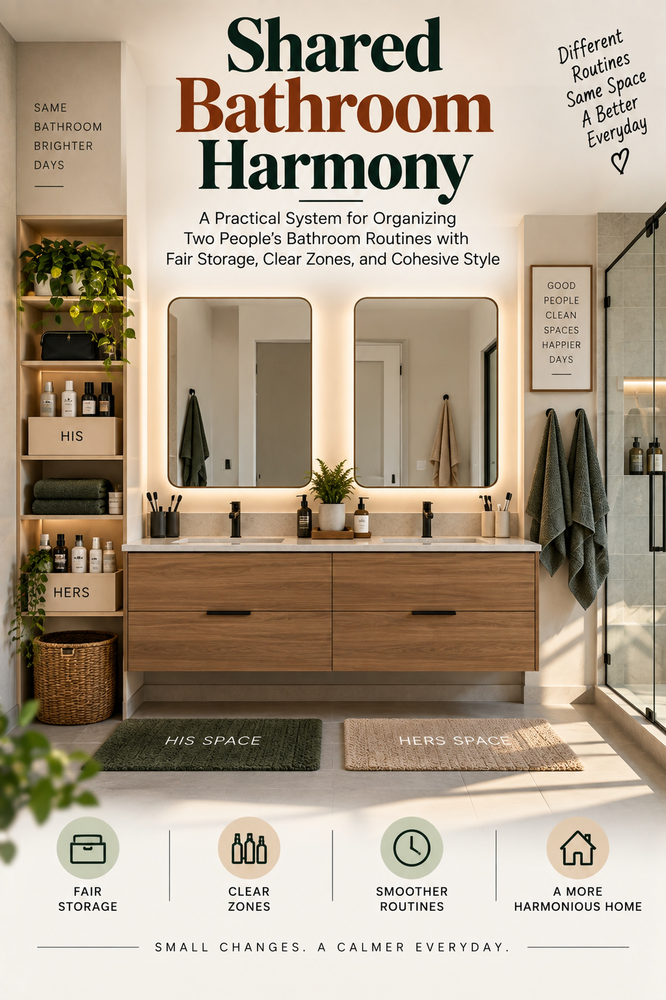
Chapter opener
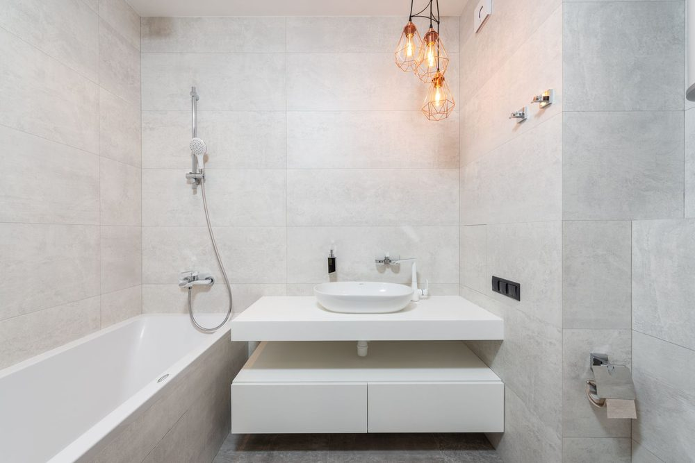
Chapter
Before you begin
This book is a practical organization guide for two people sharing a bathroom in a home they may not own. It is not a building-code manual, an electrical guide, a medical text, or a mold-remediation protocol. Example dimensions are illustrations for compact US rentals, not product specifications or required clearances. Measure your room. Follow manufacturer instructions for every appliance, organizer, adhesive, and cleaner. Some scenarios use apartments in Indian cities as compact-rental illustrations. They do not define the market. Prices, when mentioned, are in US dollars. Measurements are in inches. Bathroom receptacles in many US homes are required to have GFCI protection, but you cannot assume an outlet is protected just because it is in a bathroom. Do not operate electrical appliances with wet hands. Do not use a damaged cord, cracked plug, or appliance that sparks, overheats, or trips a breaker repeatedly. Do not run an extension cord across a wet floor or into the shower zone. A heat-resistant mat does not make a hot tool safe. Cool the tool according to its instructions before storing it. Stop and escalate. Do not open outlets, modify wiring, or attempt electrical repairs. GFCI testing and electrical protection depend on the actual installation and applicable local requirements; this book cannot confirm that an outlet is protected. If an outlet, cord, appliance, or protection condition is uncertain — including suspected faults, missing protection, damaged receptacles, repeated tripping, or unclear installation — stop using the setup and consult a qualified electrician. Appliance manufacturer instructions and local electrical rules take precedence over this book's storage suggestions. Organizing a bathroom does not replace cleaning or maintenance. Moisture, poor ventilation, and damp textiles can encourage mold and mildew. Inspect grout, caulk lines, corners, the underside of bath mats, and the backs of stored items. Keep wet sponges, loofahs, and cleaning tools from sitting in standing water. Ventilation and drying reduce moisture exposure; they do not guarantee mold prevention. Do not cover persistent mold with bins, mats, or paint, and do not treat reorganization as a fix. Routine wiping of soap film on a washable surface is not mold remediation. Report leaks, persistent dampness, a failed fan, stained building materials, or recurring growth to the landlord or property manager. For extensive or recurring mold, follow guidance from a qualified professional and pause the organization project until the moisture source is addressed. The product label, pharmacist, or prescribing clinician determines where a medicine belongs. A bathroom is not automatically suitable. If a product requires a temperature, light, or humidity limit, follow that instruction rather than a generic shelf or container from this book. Keep original packaging unless a pharmacist or the label directs otherwise. For unused or expired medicines, use a local pharmacy or authorized take-back program; do not flush or trash them unless that product's guidance says to. Identify which solutions are removable and which need landlord permission. Product compatibility depends on the surface, the load, and the manufacturer's instructions. Adhesive that holds on one tile can stain, pull glaze, or leave residue on another. When drilling or adhesive mounting is prohibited, use freestanding, tension, or over-the-door storage that does not alter the building. Fairness is not a promise that every shelf can be identical. First protect essential daily access, then assign personal storage, then agree where overflow lives. If the total volume still exceeds the available space, the solution is a reduction, a relocation, or a change in the storage plan. Work in this order: inventory first (Days 4–7), then measure (Days 8–10), then apply those records. Later days use the piles and numbers you already made. They do not restart the pull-out or the tape measure unless a field is blank or the room has changed.
Day 1 · When an equal split is the wrong answer
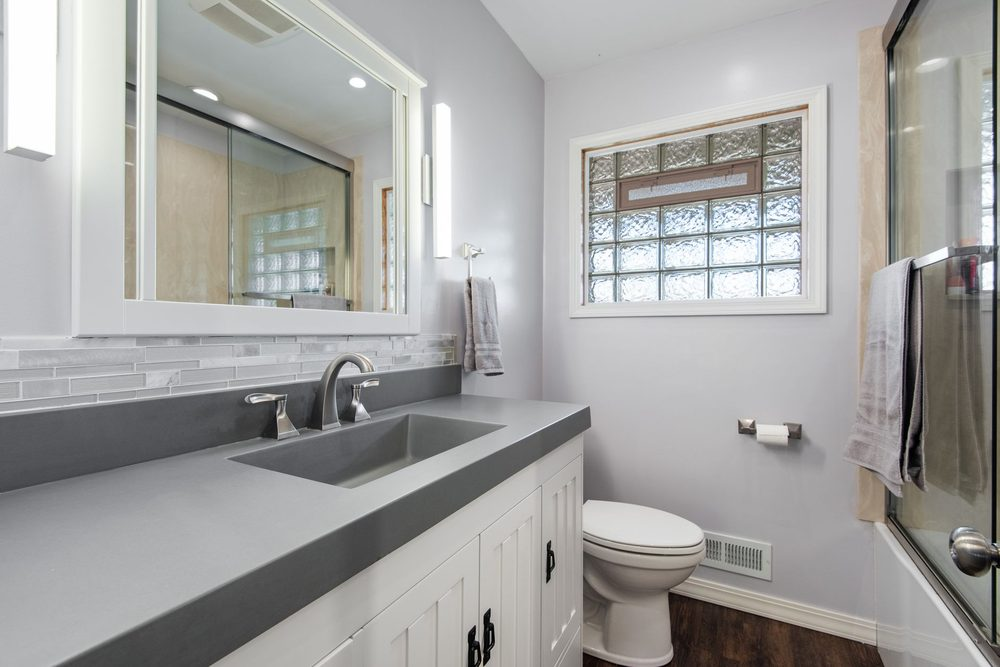
Day 1
When an equal split is the wrong answer
In this apartment
In a compact hall bath in a Pune 1BHK, used here as a small-rental illustration, Riya keeps six daily products. Aarav keeps a full grooming kit, backups, and two hair tools. Splitting every shelf fifty-fifty still leaves Aarav overflowing the counter and Riya feeling crowded.
Protect daily access first, then assign personal storage, then park overflow. Identical shelves are not always fair.
Today's output: a one-page note that lists each person's essential daily items, each person's extra volume, and whether the bathroom can hold both without a reduction.
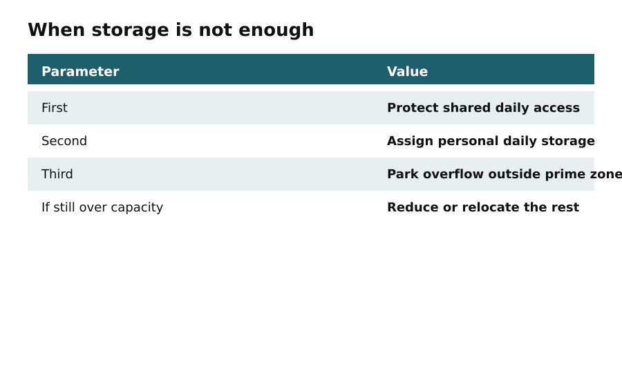
Decision order when two collections exceed the bathroom.
A fifty-fifty split sounds rational and still fails. Volume is not the same as need. One person may have a medical cream, a longer hair routine, or mobility equipment that requires more reachable space. The other person may only need a small daily kit. Equal square inches can hide unequal access.
Name three buckets before you move anything: shared essentials (soap, toilet paper, a hand towel set, a waste liner), personal daily products, and overflow. Shared essentials keep a protected home even when personal collections grow. Personal daily products get the next-best reach. Overflow does not get the prime tray just because it exists.
If the bathroom cannot hold both collections, fairness is a decision, not a rearrangement. Reduce duplicates, move backups to a bedroom closet or hall linen shelf, or agree that one person stores the larger kit elsewhere. Do not keep arguing about equal shelf counts while bottles sit on the floor.
Do this
List each person's five daily-must items.
List overflow that does not need to live in the bathroom.
Write one sentence: keep, relocate, or reduce.
Today's output
Daily-must list for each person
Overflow list
Keep / relocate / reduce decision
Day 2 · Volume, visibility, and access in one room
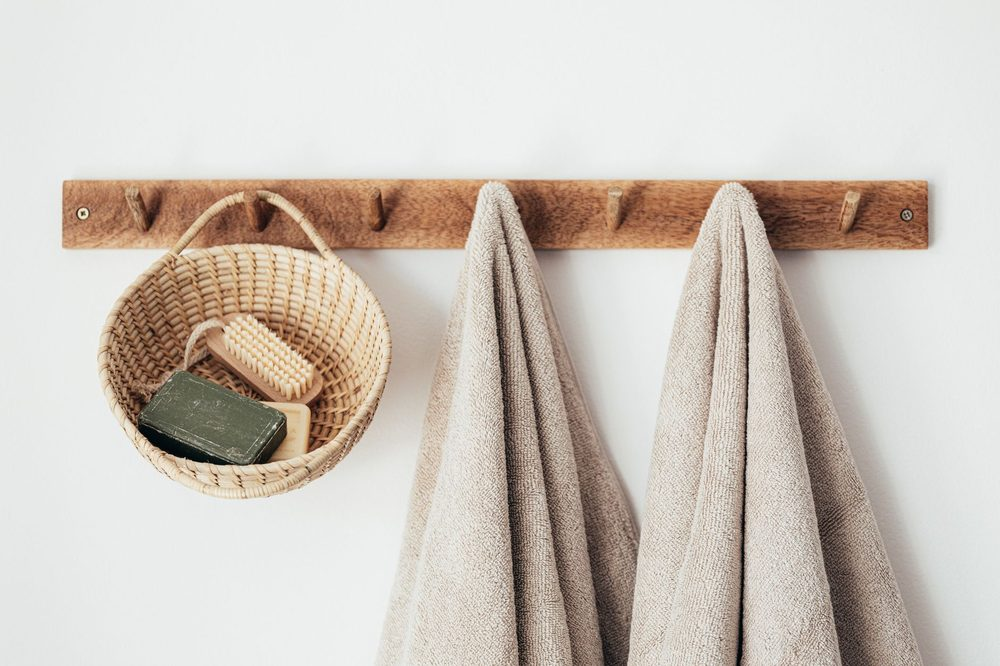
Day 2
Volume, visibility, and access in one room
In this apartment
Priya wants a nearly empty counter. Karan wants two products visible so he does not forget them. Their Bengaluru rental, used as a compact-layout illustration, has one 22-inch vanity and one shallow drawer.
Use volume, visibility, and access once as a decision tool, then apply them to a real conflict instead of restating the idea.
Today's output: three written rules — how much each person may leave out, which items must be reachable in one motion, and which items must stay concealed.
Volume is the cubic space a collection actually occupies, including backups. Measure the drawer interior and the usable counter rectangle. If Karan's kit is 1.5 times Priya's, give him more cubic space in a deeper or less visible zone, not more counter frontage.
Visibility is a style and a memory aid. Agree on a cap: one shared tray, plus at most one personal item each on the counter. Concealed storage can still be fair if both people can open it without moving the other person's things.
Access is the morning test. The person who gets ready first should not have to lift a stack. The person with reduced reach should not be assigned the lowest, deepest bin as their 'equal' share. If both people want the same prime corner, time-share it or split it by task, not by whoever unpacked first.
Do this
Cap visible counter items at one shared tray plus one personal item each.
Assign the easiest reach to daily-must items, not to the largest collection.
If both want the same prime spot, write a two-week trial instead of declaring a winner.
Today's output
Counter cap written
Reach rule written
Prime-spot trial named
Day 3 · Write the working agreement
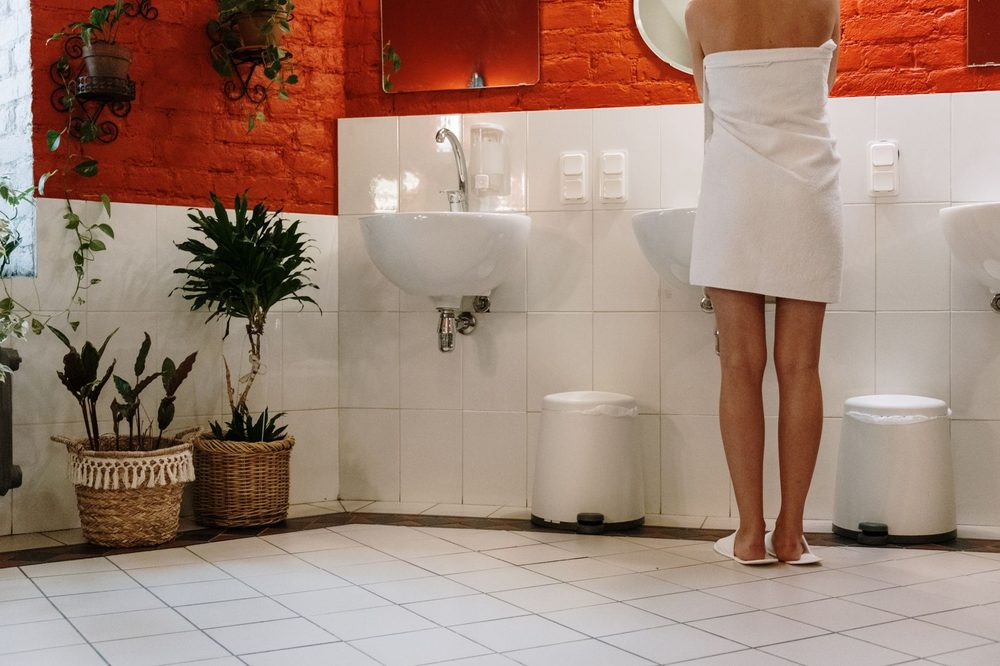
Day 3
Write the working agreement
In this apartment
Neha and Vikram share a Mumbai hall bath, used here as a tight wet-room illustration, with guests every other weekend. They need a short agreement that covers weekdays, guests, and what happens when one person refuses to reduce a collection.
A usable agreement names essential access, personal zones, overflow, a trial period, and a review date.
Today's output: a half-page agreement with five lines — purpose, shared essentials, personal zones, overflow rule, and a two-week review date.
Purpose is operational: both people can complete a weekday routine without moving the other person's items, the walking path stays clear, and wet tools dry instead of sitting in a puddle. Style comes later.
If one person refuses to reduce belongings, do not freeze the project. Protect shared essentials and the walking path anyway. Give the larger collection the overflow location outside the bathroom, or a clearly marked personal bin that may not sit on the counter. Temporary guest kits get a labeled bag that leaves after the visit.
Keep the agreement boring and specific. 'Be considerate' is not a rule. 'No bottles on the shower floor' and 'hair tools cool on the mat, then go in the caddy' are rules you can check in thirty seconds.
Do this
Write the five-line agreement.
Add one guest rule and one refusal-to-reduce rule.
Photograph the counter and shower as the starting baseline.
Today's output
Five-line agreement
Guest rule
Review date
Chapter opener
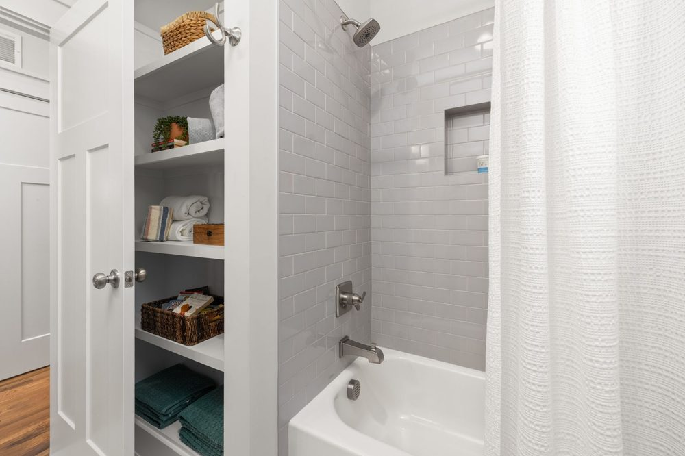
Chapter
Two-person inventory
Pull everything out once. Classify it. Decide what may stay in a humid room. Do not buy organizers during this chapter.
Day 4 · Four labels before any organizer
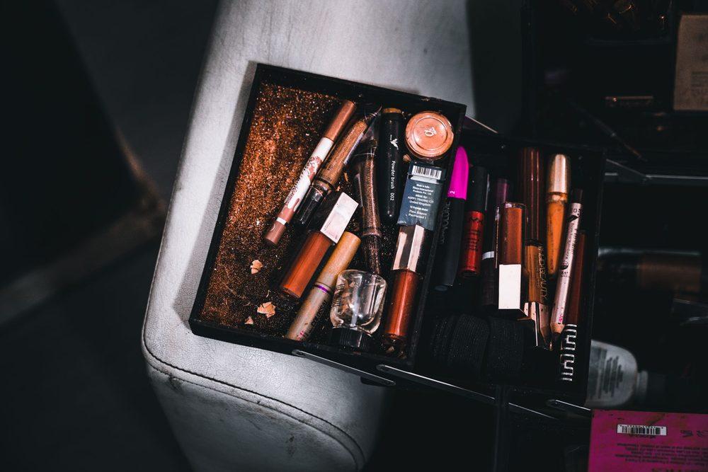
Day 4
Four labels before any organizer
In this apartment
Anjali and Rohan open a packed cabinet in a small US rental and cannot tell which bottles are shared, whose nearly empty shampoo is whose, or why a third person's leftover hotel soaps are still there.
Every item is shared, personal, temporary, or leaving. 'Neither of ours' is a real category.
Today's output: four piles — shared, personal A, personal B, temporary/discard — with a side pile for items that belong to neither resident.
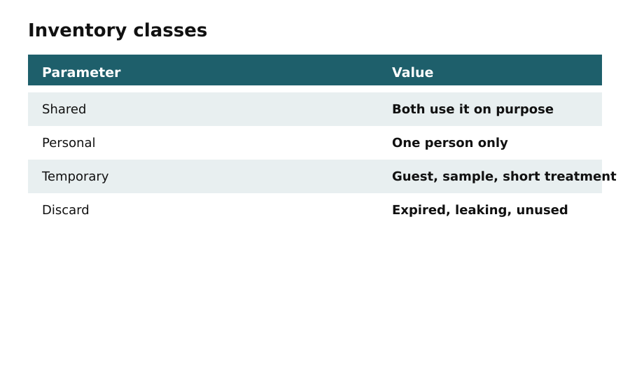
Use these four labels before buying a single container.
Shared means both people use it on purpose: hand soap, toilet paper, a basic cleaner, maybe one body wash if you actually share it. Personal means only one person uses it. Temporary means a guest kit, a sample, or a product in use for a short treatment. Discard means expired, rancid, leaking, or unused on purpose.
Items that belong to neither person — leftover from a previous roommate, unlabeled hotel bottles, mystery cords — leave the bathroom this week. Do not store them 'just in case' in the prime drawer.
Work on towels on the floor or on a table outside the bathroom if the room is too small. Keep medicines and chemicals in their original packaging while you sort. Do not pour unknowns together.
Do this
Clear one surface and pull one zone at a time.
Tag each item shared, personal, temporary, or discard.
Bag 'neither of ours' for return, trash, or building disposal rules.
Today's output
Four piles complete
Neither-of-ours bag
No new organizers purchased
Day 5 · Duplicates, almost-empty bottles, and gifts
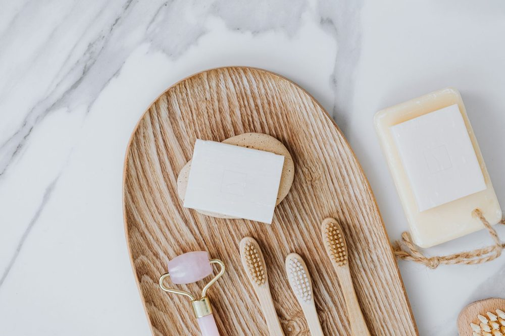
Day 5
Duplicates, almost-empty bottles, and gifts
In this apartment
Priya finds three conditioners. Sameer finds two almost-empty face washes and a gift set neither of them likes. They want a rule that does not require a debate for every bottle.
One active product per personal category in the bathroom. Backups live elsewhere. Almost-empty bottles finish or leave.
Today's output: a duplicate log with one active item per category per person, one backup location, and a decision for each gift set.
Duplicates: keep one open product in the bathroom. Park at most one backup in a labeled overflow bin if it fits. Extra backups go to a closet outside the wet room. If two people share a formula, keep one open bottle in the shared zone, not two half-used twins.
Almost-empty: if less than about a week's use remains, finish it this week or discard it according to the label. Do not keep a crusted last inch 'to be thrifty' in the prime niche.
Unused gifts and unopened backups: if nobody will use them in the next month, move them out or give them away. Rarely used products that someone refuses to discard get a dated overflow bin. If they are still untouched at the review date, they leave the bathroom even if they stay in the apartment.
Do this
Keep one active item per personal category in the bathroom.
Move extra backups out of the wet room.
Date the 'refuses to discard' bin and set a review.
Today's output
Duplicate log
Almost-empty plan
Dated overflow for refused discards
Day 6 · Expiry, humidity, and medicines
Day 6
Expiry, humidity, and medicines
In this apartment
Neha finds expired sunscreen, a cloudy toner, and a prescription cream stored next to the shower. Vikram wants those items 'handy' even though the labels say to keep them dry.
Label, pharmacist, or prescriber decides storage. The bathroom is not the default.
Today's output: a medicine list that follows each product's own storage instruction, plus a take-back plan for anything unused or expired.
The product label, pharmacist, or prescribing clinician determines where a medicine belongs. A bathroom is not automatically suitable. If a product requires a temperature, light, or humidity limit, follow that instruction rather than a generic shelf or container from this book. Keep original packaging unless a pharmacist or the label directs otherwise. For unused or expired medicines, use a local pharmacy or authorized take-back program; do not flush or trash them unless that product's guidance says to.
Process: read each label. If it lists refrigerate, protect from light, keep dry, or a temperature range, store it that way. Do not move every medicine to one 'better' room or one bathroom shelf because this chapter mentioned humidity. Some products may stay in a bathroom if the label allows it; many should not.
Expired cosmetics and toiletries are separate from medicines. Check dates and condition, and follow local disposal rules for those items. Do not dump chemicals down the sink as a decluttering method.
Do this
Read each medicine label for temperature, light, and humidity limits.
Keep original packaging unless a pharmacist or the label directs otherwise.
Take unused or expired medicines to a pharmacy or authorized take-back program.
Today's output
Each medicine matched to its label
No universal bathroom shelf
Take-back plan for unused doses
Day 7 · Photograph the keepers
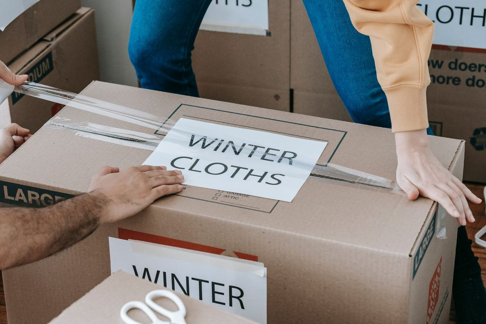
Day 7
Photograph the keepers
In this apartment
Aditi and Karan have sorted the room. They need a record so the next Target run does not restock products they already own.
A short inventory prevents repurchase. It is a photo plus counts, not a spreadsheet hobby.
Today's output: photos of each keep pile plus a count of active items, backups, and shared consumables.
Photograph each category on a towel: dental, face, hair, body, shaving, menstrual products, first aid, cleaning. Write counts in a shared note: active, backup, shared. Add refill thresholds later in the labeling chapter; today only capture what exists.
Pack keepers into temporary boxes labeled by person and shared. Do not buy matching acrylic yet. You still have to measure the cabinet around the plumbing.
If a product is in dispute, it stays in a 'trial' box for the two-week review, not on the counter.
Do this
Photograph keep piles by category.
Record active vs backup counts.
Park disputed items in a dated trial box.
Today's output
Photos saved
Counts recorded
Temporary boxes only
Chapter opener
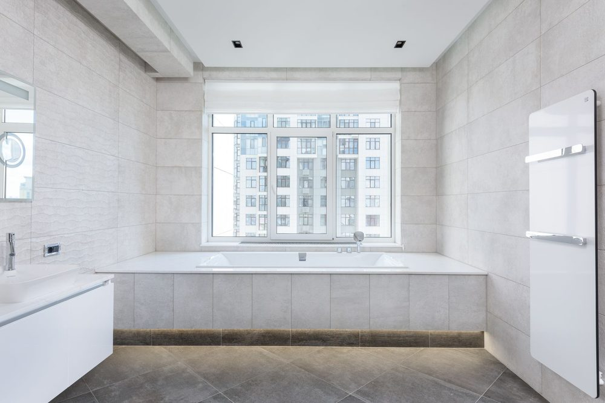
Chapter
Measure the bathroom first
Measure first, buy second. Record interior width, depth, and usable height — not only the cabinet's outside size. Check door swing, fixture access, and the space needed to remove a container together. Example dimensions in this chapter are illustrations, not universal minimum clearances. Accessibility needs differ between people and rooms; a height that works for one person may be unusable for another. Zoning comes after the tape measure, not before the shopping cart.
Day 8 · Vanity, drawers, and the pipes
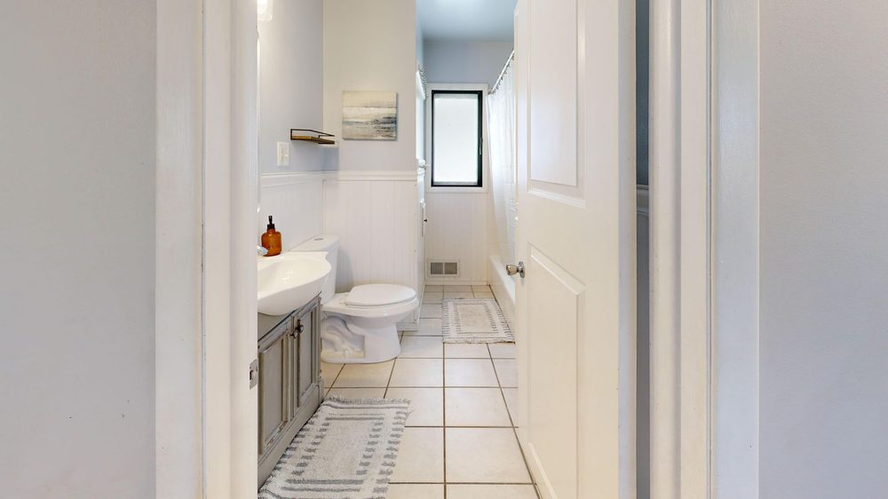
Day 8
Vanity, drawers, and the pipes
In this apartment
Priya's US rental vanity looks 'about two feet wide' until she measures: 24 inches outside, 21.5 inches of usable drawer width after the slides, and a 4-inch pipe cluster that kills the center of the under-sink cabinet.
Record interiors, obstacles, and removal space. Exterior width is not the storage you can use, and sample inches are not a code minimum.
Today's output: interior measurements for the vanity, each drawer, and both under-sink pockets, plus a note that door or drawer still closes with a test object inside.
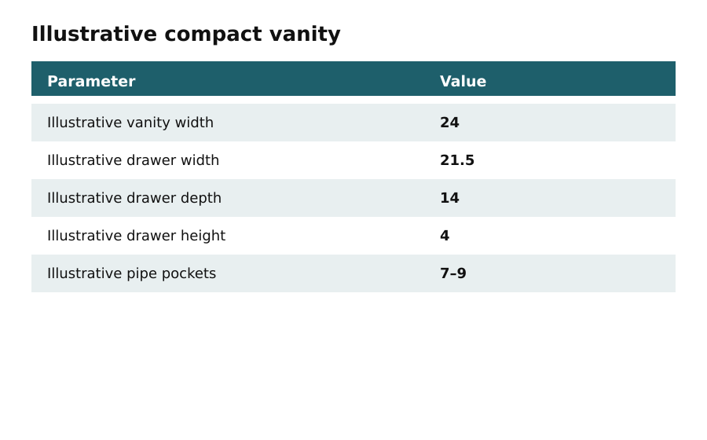
Illustrative example only. Not a minimum clearance. Measure your cabinet.
Example, illustrative only — not a minimum and not your cabinet: a narrow hall vanity might be 24 inches wide and 18 inches deep outside, with a drawer interior about 21 inches by 14 inches by 4 inches. A wider-looking counter might be 36 inches with no drawers. Measure the opening you can actually use, including slides, pipes, and hinges.
Measure around plumbing as a U-shape: left pocket, right pocket, and the blocked center. Photograph the pipes. Storage must leave shutoff valves reachable. If a trap or supply line is dripping, stop organizing and tell the landlord or a plumber.
Check together: interior fit, door or drawer swing in the room, and the extra space to pull the loaded container out. A bin can match the empty box and still fail once it has a lid, a handle, or a person who cannot kneel.
Do this
Measure vanity exterior, then each drawer interior (W × D × H).
Sketch pipes and measure left and right usable pockets.
Test door or drawer close and removal space with a stand-in object.
Today's output
Interior numbers
Pipe sketch with two pockets
Close-and-remove test
Day 9 · Shower, door swing, and outlets
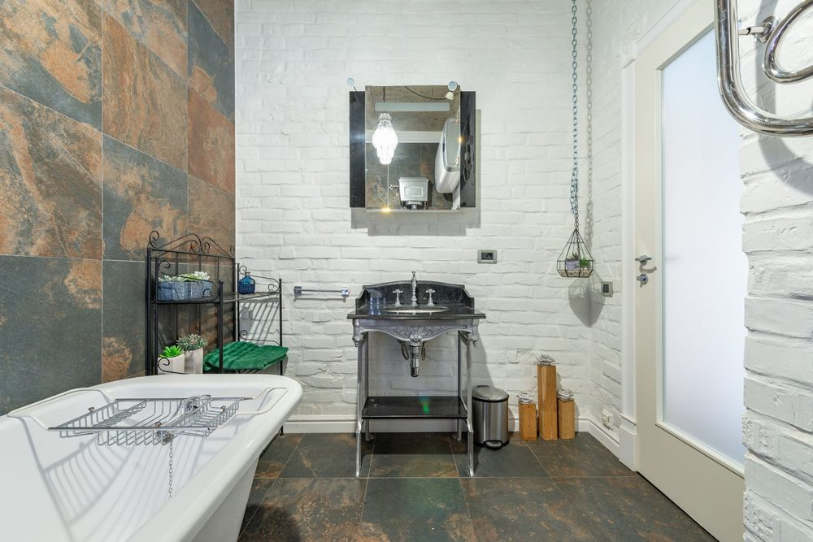
Day 9
Shower, door swing, and outlets
In this apartment
Rohan maps a stall. An illustrative case, not a standard: a 32-by-32-inch stall, a textured floor, a glass door that swings into the towel path, and one outlet on the sink wall. Your stall will differ.
Storage that blocks a door, a standing space, or a safe appliance path is not storage.
Today's output: shower interior, any niche or corner, door-swing overlay, walking-path pinch point, and outlet locations noted as wet-side or dry-side — without treating any of those numbers as a universal minimum.
Measure shower width, depth, and any built-in niche. Record the floor type. Leave standing space clear. Bottles on the floor are a slip problem, not extra storage.
Trace the door swing with the door open and closed. Check that overlay together with fixture access and the space needed to remove a caddy. A hanging organizer can fit the door and still hit the toilet.
Mark outlets on the sketch. Treat splash range as a constraint. Do not plan a cord across the walking path. If you cannot tell whether protection is adequate, use Stop and escalate — do not open the outlet to investigate.
Do this
Measure shower interior and any niche or corner.
Mark door swing and the walking path from door to sink to shower.
Note outlet locations relative to water and walking paths.
Today's output
Shower numbers
Door-swing note
Outlet sketch
Day 10 · Measure first, buy second
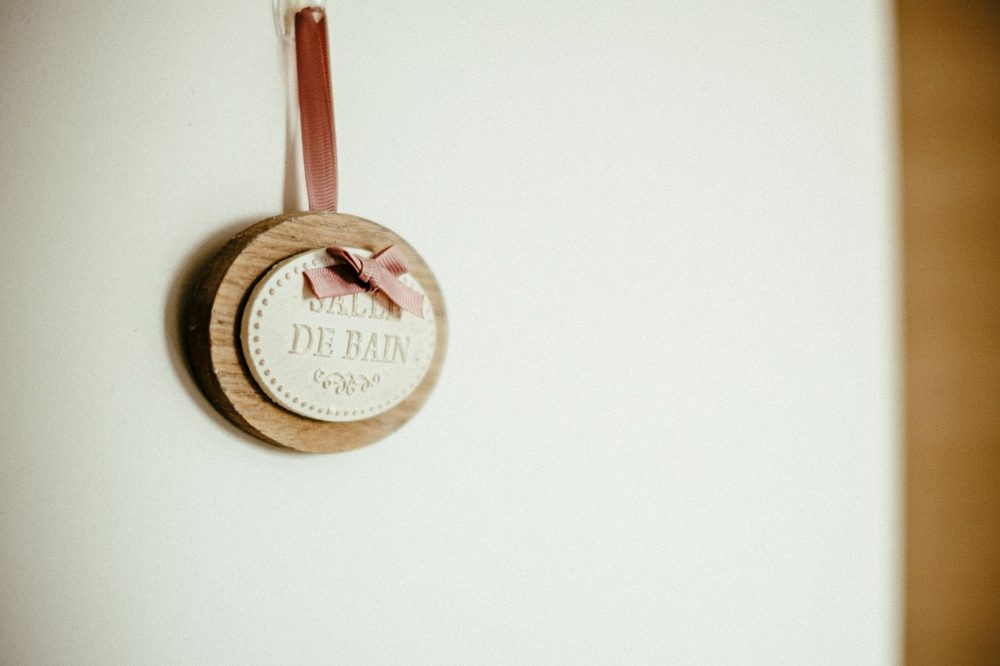
Day 10
Measure first, buy second
In this apartment
Neha is about to add a $12 over-toilet shelf and a $25 drawer set. The tape measure says the toilet tank is 8.5 inches from the wall and the drawer set is 10 inches deep.
Fit includes handles, lids, removal clearance, and the manufacturer's listed dimensions.
Today's output: a buy/wait list. Nothing is purchased until the number on the product page is smaller than the usable opening, including removal clearance.
For each candidate container, write: intended location, measured opening, product W × D × H, extra space to grab and lift, lid or handle overhang, removable or fixed, and a yes/no. If any field is blank, the answer is no.
Check three things together before a yes: the container fits the interior, the door or drawer can still swing past fixtures, and you can remove the loaded container. A bin can fit the cabinet and still block the toilet or trap a person who needs more clearance.
If wall space is almost zero, the shopping list should start with freestanding and in-cabinet pieces, not with adhesive hooks. Renter rules come next chapter.
Accessibility differs. If either person cannot reach, bend, or see into that location, the measurement can be perfect and the purchase still wrong.
Do this
For each want-to-buy item, compare listed size to usable opening.
Add handle, lid, and removal clearance.
Mark buy, wait, or skip.
Today's output
Buy/wait list
Clearance included
No impulse set
Chapter opener
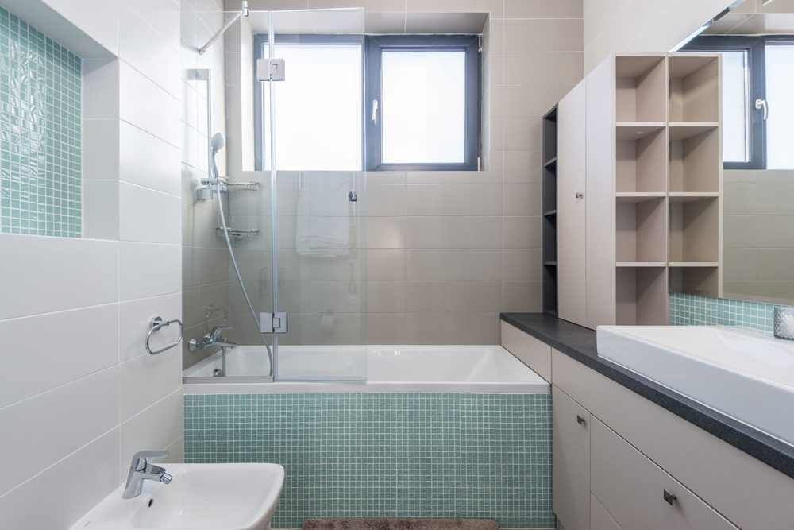
Chapter
Renter-safe mounting
Identify which solutions are removable and which need landlord permission. Product compatibility depends on the surface, the load, and the manufacturer's instructions. Adhesive that holds on one tile can stain, pull glaze, or leave residue on another. When drilling or adhesive mounting is prohibited, use freestanding, tension, or over-the-door storage that does not alter the building. This chapter is a decision tree, not a catalog of hooks.
Day 11 · Removable, permission, or skip
Day 11
Removable, permission, or skip
In this apartment
Asha wants a shower caddy and a medicine-cabinet expansion in a US rental that forbids holes in tile. Her roommate wants 'whatever holds the most.'
Sort every mounting idea into removable, needs permission, or skip. Load and surface matter more than the product photo.
Today's output: a three-column list of storage ideas — removable, landlord permission, skip.
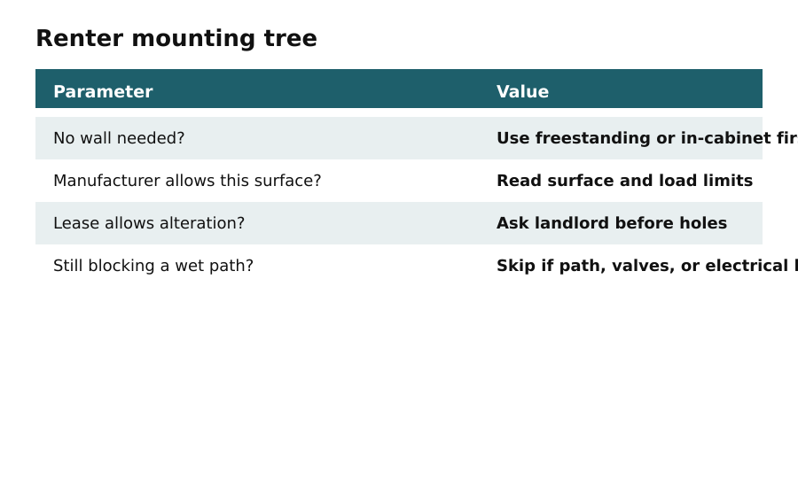
Start at the top. Stop when the answer is no.
Removable usually includes freestanding shelves, over-the-toilet units that do not screw down, tension rods used only as the manufacturer allows, over-the-door hooks that do not crush the door, and in-drawer organizers. Even these can scuff floors or trap moisture; use pads and check the finish.
Permission typically includes drilling tile, stud-mounted bars, replacing a mirror, and any electrical work. Adhesive is not automatically renter-safe. It can fail in steam, drop glass, or pull paint. Read the product's surface list. Painted drywall, textured plaster, and cheap tile are common failure surfaces.
Skip anything that blocks the shutoff valves, the access panel, the GFCI reset, or the walking path. Skip homemade mounting that the manufacturer did not specify.
Do this
List every mounting idea you are tempted to use.
Mark removable, permission, or skip.
Photograph existing damage so you are not blamed for it later.
Today's output
Three-column list
Existing-damage photos
Access panels left clear
Day 12 · Adhesive residue and failed hooks
Day 12
Adhesive residue and failed hooks
In this apartment
Priya's previous adhesive hooks left gray halos on rental tile. She wants a method that does not add a new halo.
Follow the product's install and removal instructions. Heat, solvents, and scraping can damage glazes. When unsure, do not apply.
Today's output: a written install/removal plan for any adhesive you still intend to use, or a decision to use zero adhesive.
Clean and dry the surface as the manufacturer specifies. Steam rooms and freshly used showers are bad install conditions. Weight ratings assume correct surface, cure time, and load direction. A caddy full of wet bottles is heavier than the empty product photo.
Removal: use only the method on the package. If residue remains, stop before sanding or mystery solvents. Ask the landlord before using anything that can dull grout or paint. Photograph after removal.
If the lease bans adhesive and drilling, the answer is freestanding storage, a tension shelf only where the manufacturer allows that use, or storing more items outside the bathroom.
Do this
Read install, surface, load, and removal text on the package.
Weigh the loaded use case, not the empty caddy.
Choose zero adhesive if the lease or the surface is unclear.
Today's output
Package instructions saved
Loaded-weight check
Zero-adhesive fallback
Day 13 · No wall space, and move-out
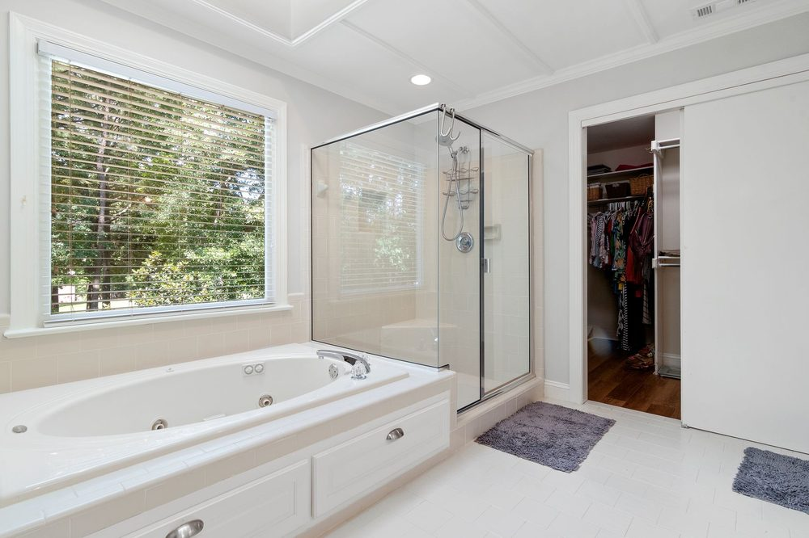
Day 13
No wall space, and move-out
In this apartment
Neha's bathroom has one short wall of tile, a window, and a door. There is almost no legal place to hang a cabinet. She also needs a move-out list for twelve months from now.
When walls are unusable, storage becomes furniture, drawers, and rooms next door. Plan the reverse of every attachment on day one.
Today's output: a no-wall storage plan plus a move-out checklist with every attachment you still intend to use.
No-wall options: a slim rolling cart that parks beside the vanity if the walking path stays clear; stacked drawers that fit the measured under-sink pockets; a mirrored medicine cabinet already in the room, reorganized rather than replaced; a labeled caddy that lives on a bedroom dresser and travels in for hair styling.
Move-out: remove organizers, adhesive, and over-the-door hooks; check for moisture under bins and mats; replace damaged liners; photograph empty surfaces; note any remaining residue for the landlord conversation. Keep original hardware in a bag if you swapped a shower head or toilet seat with permission.
Do not wait until the last day to discover rust rings from a metal caddy or a black rectangle under a bath mat.
Do this
Pick no-wall storage that keeps the walking path clear.
Write a reverse-install step for every attachment.
Add a monthly moisture check under mats and bins.
Today's output
No-wall plan
Move-out reverse list
Moisture-check reminder
Chapter opener
Chapter
Vanity and drawer scenarios
The vanity is usually the most contested surface. Use the scenario that matches your cabinet. Do not buy organizers until the dimensions from Chapter 3 are on paper.
Day 14 · One sink, one small drawer
Day 14
One sink, one small drawer
In this apartment
Priya and a roommate share a 24-inch-wide vanity with one shallow drawer and a crowded counter. Both want the drawer for daily items.
The small drawer holds daily-must items in two lanes. Backups do not get a vote.
Today's output: a drawer map — left lane, right lane, shared front tray — with a list of what is banned from the drawer.
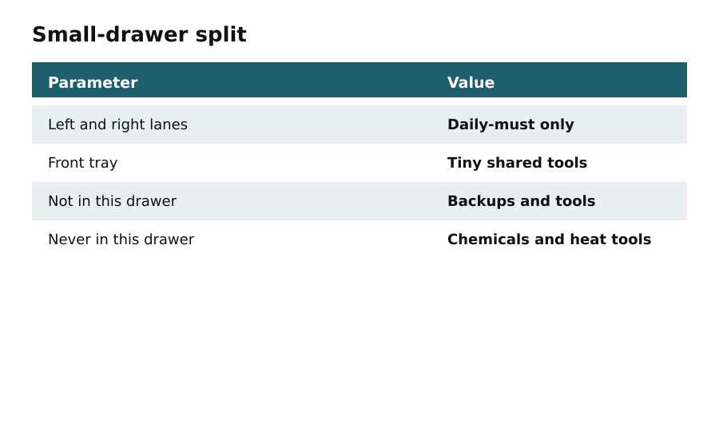
What belongs in a single shallow shared drawer.
Store there: each person's top daily items that fit upright or in a shallow tray — dental kit, daily face products, contact case if the label allows a bathroom, one small grooming tool. Split the drawer by adjustable dividers only after you measure interior width.
Do not store there: backups, hair tools, cleaning chemicals, medicines that must stay dry, or anything that forces the drawer to jam. If capacity is insufficient, daily-must items stay; extras move to a bedroom or under-sink pocket.
Access: both people should open the drawer without unloading it. Shared tiny tools sit in a front tray. If one person needs more volume, they get under-sink volume, not a larger share of this drawer.
Do this
Measure the drawer interior and choose two lanes only if both fit.
Place daily-must items only.
Write the ban list on a note inside the cabinet.
Today's output
Drawer map
Ban list
Backups relocated
Day 15 · Wide counter, almost no drawers
Day 15
Wide counter, almost no drawers
In this apartment
Riya has 36 inches of counter, no drawers, and a medicine cabinet that is already full. Products spread to look 'organized' and still eat the sink edge.
A wide counter is not permission to display a collection. Use two small trays and hide the rest.
Today's output: a counter cap — two trays or one divided tray — and an overflow home for everything else.
Store on the counter: shared soap, a toothbrush cup if you use one, and one tray each for items used every morning. Leave a dry landing zone beside the sink so wet hands are not fishing in a product pile.
Do not store on the counter: backups, cardboard, hair tools, and anything that cannot tolerate splashes. If you have no personal cabinet, use a labeled lidded box on a nearby dresser or a measured under-sink bin.
Split access by tray, not by claiming half the stone. If capacity is still short, reduce visible items before buying a second tier that blocks the mirror.
Do this
Place two small trays or one divided tray.
Move everything else off the counter.
Keep a clear splash zone around the basin.
Today's output
Counter cap
Splash zone clear
Off-counter overflow named
Day 16 · Plumbing occupies the cabinet
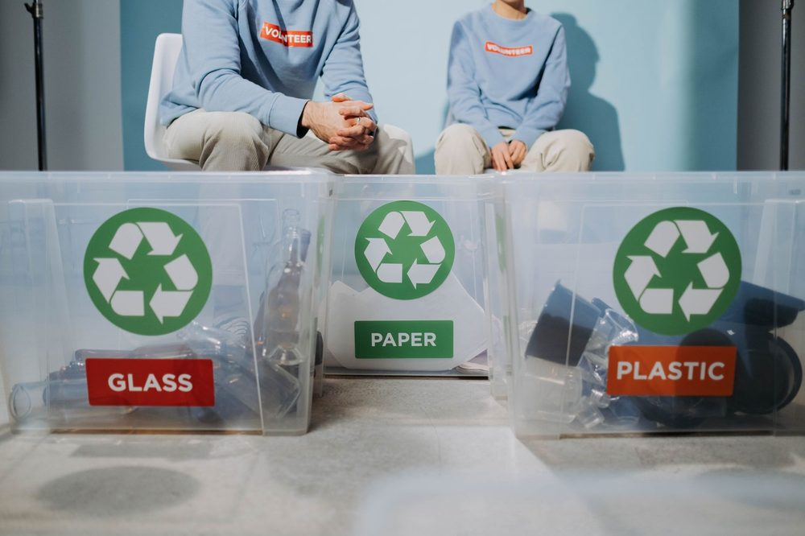
Day 16
Plumbing occupies the cabinet
In this apartment
Sameer's under-sink cabinet is a U around a bulky trap. A single plastic tub does not close the door.
Apply the Day 8 pocket numbers. Do not start a new measuring session.
Today's output: a bin choice for each Day 8 under-sink pocket, smaller than that pocket including grab space. Remeasure only if those numbers were never written down.
Store there: weekly extras, sealed backups in water-resistant bins, and a small shared cleaning caddy if chemicals stay upright in original bottles and cannot contaminate personal care items. Use a removable liner.
Do not store there: open cardboard, loose batteries, hair tools, or a bin that blocks shutoff valves. Medicines belong only if that product's label allows a damp cabinet — most will not. If the cabinet is wet, report the leak; do not organize around it.
If both pockets still cannot hold the collections, overflow leaves the bathroom.
Do this
Open the Day 8 pocket numbers.
Choose two bins smaller than those pockets, including grab space.
Confirm valves and the door still work.
Today's output
Bins matched to Day 8 pockets
Valve access
Door closes
Day 17 · Two people, one narrow medicine cabinet
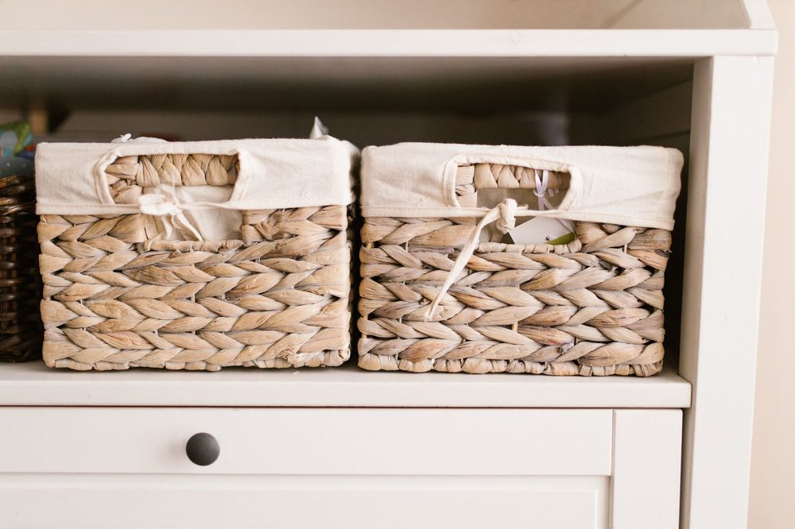
Day 17
Two people, one narrow medicine cabinet
In this apartment
A couple shares one 14-inch-wide medicine cabinet with three shelves. Both want eye-level.
Eye-level is for daily-must items, split by shelf or by left/right. The cabinet is not a pharmacy archive.
Today's output: a shelf assignment — who gets which shelf or which side — and a list of items that must leave the cabinet.
Store there: daily face and dental items that fit the shelf depth. Measure depth and door clearance with the tallest bottle you intend to keep. If the door hits the bottle, the bottle does not belong there.
Do not store there: first-aid bulk, backups, or any medicine whose label, pharmacist, or prescriber keeps it elsewhere. A cabinet named 'medicine' is still a humid box. Sensitive non-medicine products can use an opaque bin if both people agree not to rummage.
If the cabinet cannot hold both daily kits, one kit moves to the drawer or a personal caddy. Equal frustration is not a plan.
Do this
Measure shelf depth and door clearance with the tallest bottle.
Assign shelves or left/right sides.
Remove anything that needs humidity-controlled storage.
Today's output
Shelf map
Door-clearance test
Humidity-sensitive items removed
Day 18 · Deep drawers and open shelves
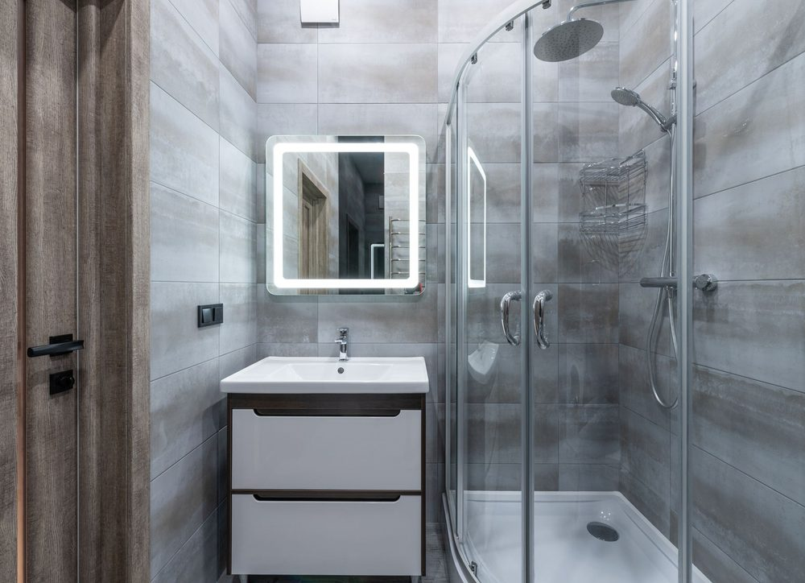
Day 18
Deep drawers and open shelves
In this apartment
A deep bottom drawer swallows items. An open-shelf vanity shows every mismatched bottle to anyone who walks in.
Deep storage needs a pull-forward tray. Open shelves need a privacy and splash plan, not more display.
Today's output: a front/back map for the deep drawer, and a conceal-or-reduce plan for open shelves.
Deep drawer: daily items in a front tray you can lift out. Occasional items behind it in a second tray. Nothing loose at the back. If bending is hard for either person, this drawer is the wrong home for daily-must items — move those up.
Open shelves: use closed bins for personal and sensitive products. Shared soap can stay visible. Do not line open shelves with small bottles that splash will knock down.
No dedicated personal storage in the room: give each person a lidded caddy that lives on a bedroom shelf and parks on the counter only during use. That is a valid shared-bathroom design.
Do this
Put a lift-out tray at the front of any deep drawer.
Move daily-must items up if bending is difficult.
Hide personal products on open shelves inside opaque bins.
Today's output
Front tray in deep drawer
Reach check
Opaque bins on open shelves
Chapter opener
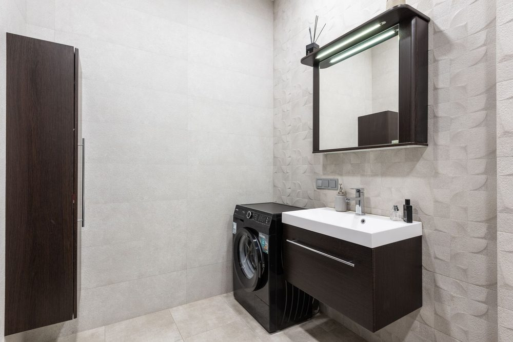
Chapter
Hair tools and electrical safety
Follow the electrical and heat-tool limits in Before you begin. A shared bathroom makes those tools a storage problem and a safety problem at the same time. A heat-resistant mat does not make a hot tool automatically safe. Manufacturer instructions and local electrical rules take precedence over the storage ideas in this chapter. If protection or wiring is uncertain, use the Stop and escalate rule rather than improvising.
Day 19 · Cool first, then store
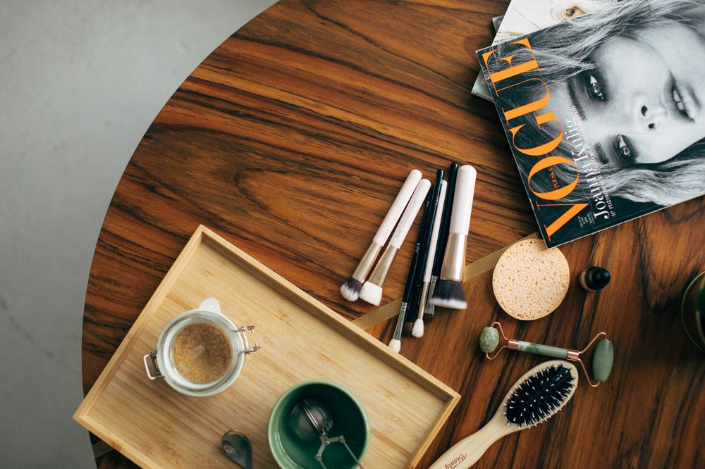
Day 19
Cool first, then store
In this apartment
Neha finishes straightening her hair and drops the iron onto a silicone mat beside a damp towel. The mat is 'heat-safe.' The towel is not a plan.
A heat-resistant mat is not an automatic safe station. Follow the appliance instructions, cooling time, surface, and distance from water.
Today's output: a written cool-down rule and a storage home that is used only after the tool is cool enough per the manufacturer.
Use the tool on a stable, dry surface that the manufacturer allows. Keep water, hanging towels, paper, and aerosol cans away from the barrel. Do not rest a hot tool on a plastic organizer, a painted stool, or the toilet tank because those surfaces were empty.
When you are done, set the tool on the rated mat or rest to cool. Only then move it to a caddy, hook, or drawer. Tight wrapping of a warm cable can damage the cord. Loop loosely after cooling, or use the manufacturer's cord wrap.
If two people share tools, label ownership. A shared dryer needs a booking rule in the next section, not a pile of cords in one cup.
Do this
Read the appliance's cooling and storage instructions.
Pick a dry landing surface away from the sink and tub.
Store only after the tool has cooled as directed.
Today's output
Cool-down rule posted
Landing surface chosen
No tight wrap on a warm cord
Day 20 · Cords, outlets, and GFCI limits
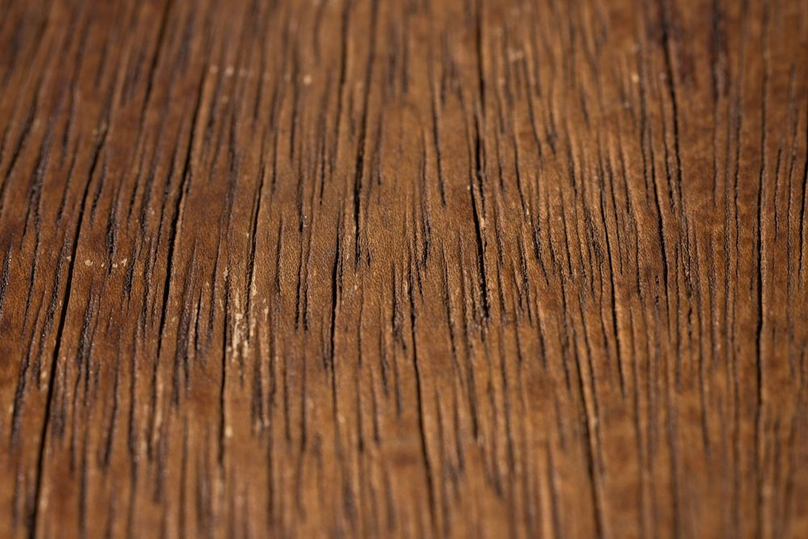
Day 20
Cords, outlets, and GFCI limits
In this apartment
Priya's dryer cord crosses the doorway. The only outlet is beside the sink. She cannot see a GFCI test button.
If protection, wiring, or an appliance condition is uncertain, stop and escalate. Do not repair it.
Today's output: a cord path that stays out of the walking path and the wet zone, plus a written Stop and escalate decision for any uncertain outlet, cord, or appliance.
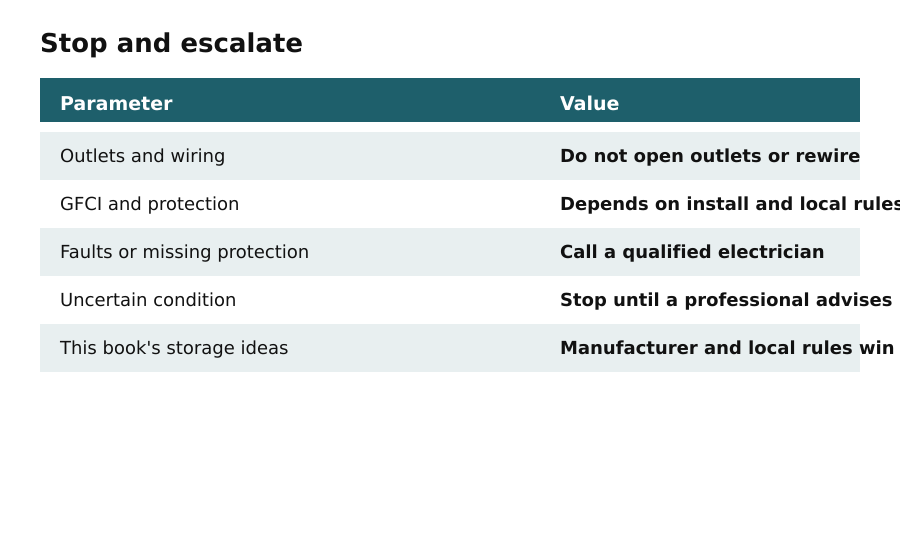
Do not improvise electrical repairs. Manufacturer instructions and local rules win.
Stop and escalate. Do not open outlets, modify wiring, or attempt electrical repairs. GFCI testing and electrical protection depend on the actual installation and applicable local requirements; this book cannot confirm that an outlet is protected. If an outlet, cord, appliance, or protection condition is uncertain — including suspected faults, missing protection, damaged receptacles, repeated tripping, or unclear installation — stop using the setup and consult a qualified electrician. Appliance manufacturer instructions and local electrical rules take precedence over this book's storage suggestions.
Treat unknown GFCI protection as uncertainty, not as a DIY test project. Do not open the receptacle to look for a GFCI device. Do not use an extension cord or power strip as a substitute for protection. Cord clips are only for surfaces and loads the clip manufacturer allows.
If the tool, plug, or outlet is cracked, hot, buzzing, wet, or trips repeatedly, stop using it. Storage ideas in this book never override the appliance instructions or local electrical requirements.
Do this
Route the cord so nobody steps on it and it cannot drape into the sink.
Inspect cords and plugs; retire damaged tools without opening the outlet.
If anything about the receptacle or protection is uncertain, stop and call a qualified electrician.
Today's output
Cord path drawn
Damaged tools retired
Stop-and-escalate decision written
Day 21 · Two people, one dryer
Day 21
Two people, one dryer
In this apartment
A weekday morning: both people need the same dryer between 7:20 and 7:40. The bathroom is too small for two bodies and a hot barrel.
Time-share the tool, or move one routine. Do not operate a dryer over a wet floor while someone else is showering.
Today's output: a weekday time window for each person, a cooling gap between uses, and a backup plan if the window fails twice in a week.
Write start and end times that include cooling and exit. The second person does not grab a tool that is still hot. If the first person runs late, the agreement should say whether they finish or yield — decide that now, not at 7:31.
If both must style hair, consider a second inexpensive dryer only if there is a safe outlet plan and storage for two tools. A second tool that sits on the toilet lid is not an upgrade.
Guests do not get ad-hoc access to a hot tool without the same cooling and cord rules.
Do this
Assign two non-overlapping weekday windows including cooldown.
Write the late-running rule.
Decide whether a second tool is needed after a two-week trial.
Today's output
Time windows
Late rule
Two-week trial date
Chapter opener
Chapter
Wet zones, towels, and walking paths
Use the moisture and mold limits in Before you begin. Keep a dry walking path. Keep textiles in one of three states: clean, drying, or used. Organizing does not replace cleaning or maintenance. Ventilation and drying help; they do not guarantee mold prevention. Do not cover persistent growth, and report leaks or recurring dampness to the landlord.
Day 22 · Wet zone and dry zone
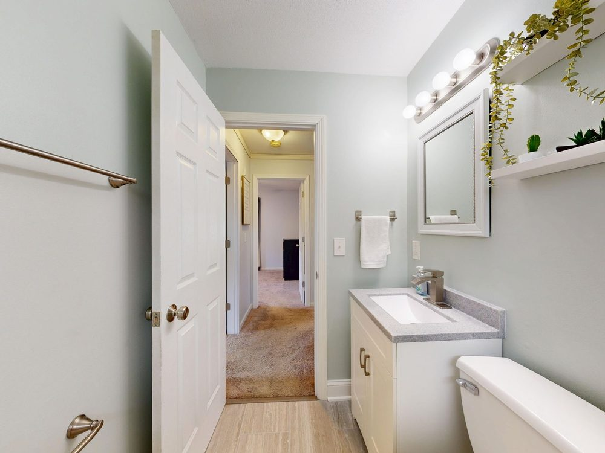
Day 22
Wet zone and dry zone
In this apartment
A small hall bath has a shower that wets the entire floor, a vanity that splashes, and a bath mat that never dries. Bottles live at the stall entrance.
Name a wet zone, a splash zone, and a dry zone. Storage and walking happen in different places.
Today's output: a floor sketch with wet, splash, and dry zones, plus a list of items banned from the walking path.
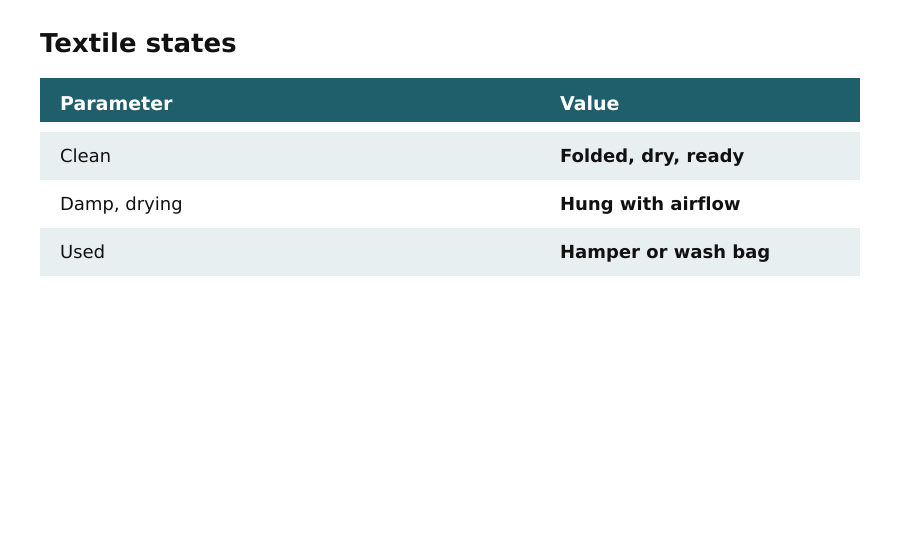
A shared bathroom needs three textile states, not one heap.
Wet zone: shower or tub interior and the immediate drip edge. Nothing is stored on that floor. If you need a stool or caddy there, it must drain, stay stable on that floor type, and still leave a place to stand.
Splash zone: sink perimeter. Trays should have raised edges. Cardboard stays out. Medicines stay out unless the label, pharmacist, or prescriber says that specific product may live there. Wipe standing water rather than organizing around it.
Dry zone: the walking path from door to sink to shower. Keep it clear of cords, bins, and laundry. If you find persistent mold, a leak, or building materials that stay damp, do not cover them with a mat or a bin — report them. Ventilation helps dry the room; it does not guarantee mold prevention.
Do this
Sketch wet, splash, and dry zones.
Remove bottles and cords from the walking path.
Hang or remove a mat that stays soaked.
Today's output
Zone sketch
Path cleared
Soaked mat addressed
Day 23 · Towels: clean, damp, used
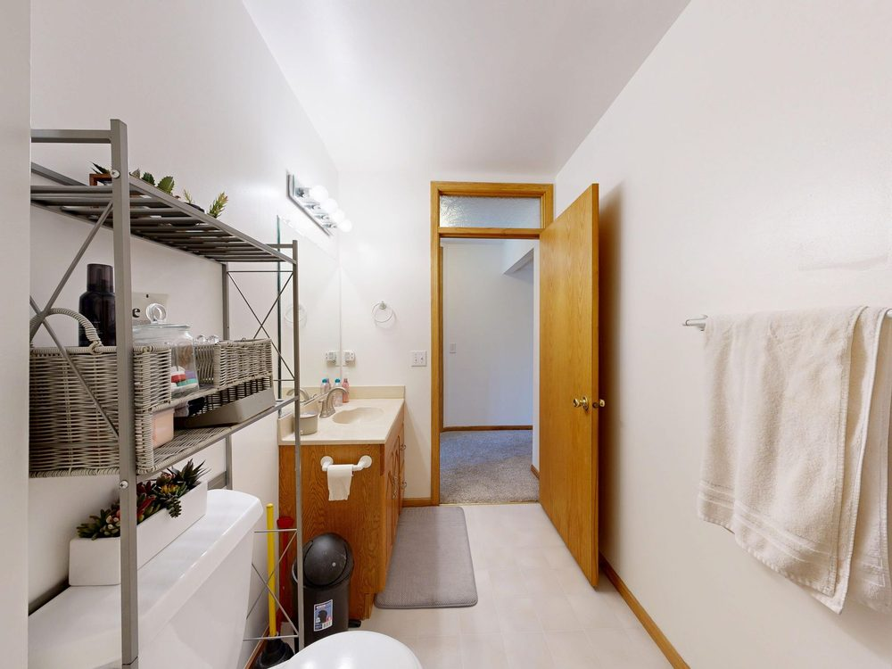
Day 23
Towels: clean, damp, used
In this apartment
Two people share two hooks. Damp towels stack on the same hook and stay wet until they smell.
Each person needs a drying spot with airflow. Used towels do not return to the clean stack.
Today's output: a towel map — clean storage, drying hardware, used-laundry destination — with a wash cadence.
Clean towels live folded on a shelf or in a labeled stack, away from shower spray. If you do not have a linen closet, use a lidded bin in a dry zone or a bedroom shelf.
Damp towels hang fully spread on a bar, hook, or over-the-door rack that the door can still close. Two people need two drying spots. A single hook for two wet bath sheets is how odor starts. If a towel cannot dry before the next shower, wash it or add drying capacity — do not invent a third damp pile on the toilet tank.
Used towels go to a hamper that can air, not a sealed plastic bag of wet cotton. Shared laundry rules belong in writing: who washes bath textiles, and how often.
Do this
Assign one drying spot per person.
Separate clean stacks from the hamper.
Write a wash cadence for bath textiles.
Today's output
Two drying spots
Clean vs used split
Wash cadence
Day 24 · Waste bin, liners, and odor
Day 24
Waste bin, liners, and odor
In this apartment
The bin sits under the towels, has no liner, and is emptied when it overflows. The room smells even after a 'reset.'
The bin needs a dry, reachable location, a liner habit, and a ventilation routine. Organization does not cancel odor.
Today's output: bin location, liner type, empty schedule, and a ventilation step after showers.
Place the bin where a foot path will not kick it over, away from toothbrushes. A small lidded bin can help odor if the lid is actually used and the liner is changed. Do not hide a dripping liner behind under-sink products.
Menstrual products and other personal waste need a liner and a closed bin or a disposal method both people can live with. Do not leave this as an awkward unstated problem.
Ventilation: run the fan during the shower and after, or open a door or window if that is the only option and privacy allows. A working fan reduces moisture; it does not guarantee the room will stay mold-free. If the fan does not work, report it. That is a maintenance issue, not a candle problem.
Do this
Place the bin off the walking path with a liner.
Set an empty-and-replace-liner schedule.
Use the fan or airflow after every shower.
Today's output
Bin location
Liner habit
Fan or airflow step
Day 25 · Run one morning on the new map
Day 25
Run one morning on the new map
In this apartment
Meera organized yesterday. This morning she still reaches twice for toothpaste and steps on a cord.
A layout that fails the first weekday morning is not finished. Move the item, do not add a motivational label.
Today's output: a punch list from one real morning and one real evening, with each miss turned into a move.
Each person runs their routine without coaching. If an item is always wet, it is in the splash zone. If someone waits in the hallway, the time-share rule is wrong. If a drawer cannot open because a bin is behind the door, the bin is wrong.
Limited hot water: the person who showers second should not have to negotiate heat while hunting for shampoo. Keep shower daily-must items in the stall so the shower can be short.
Write the misses. Fix one conflict today, not ten aesthetic tweaks.
Do this
Run one weekday morning each without rearranging mid-routine.
List every extra reach, wait, or wet item.
Make one layout change per miss.
Today's output
Morning test notes
Evening test notes
One fix per miss
Day 26 · Photograph the zones
Day 26
Photograph the zones
In this apartment
Akash and Riya will forget what 'reset' looks like in three weeks. They need a visual, not another fairness lecture.
A reset photo is a maintenance tool. Take it after the morning test, not before.
Today's output: photos of vanity, under-sink, shower, towel drying, and the walking path, stored in a shared note.
Shoot straight-on. Include the empty floor path. These photos are the weekly reset target, not social media.
If a zone already drifted during the test day, photograph the corrected version.
Do not print a poster of the Fairness Triangle. The photo of the actual tray is the standard.
Do this
Photograph each zone after the test day.
Save to a shared album.
Caption person A, person B, shared, overflow.
Today's output
Five zone photos
Shared album
Captions
Chapter opener
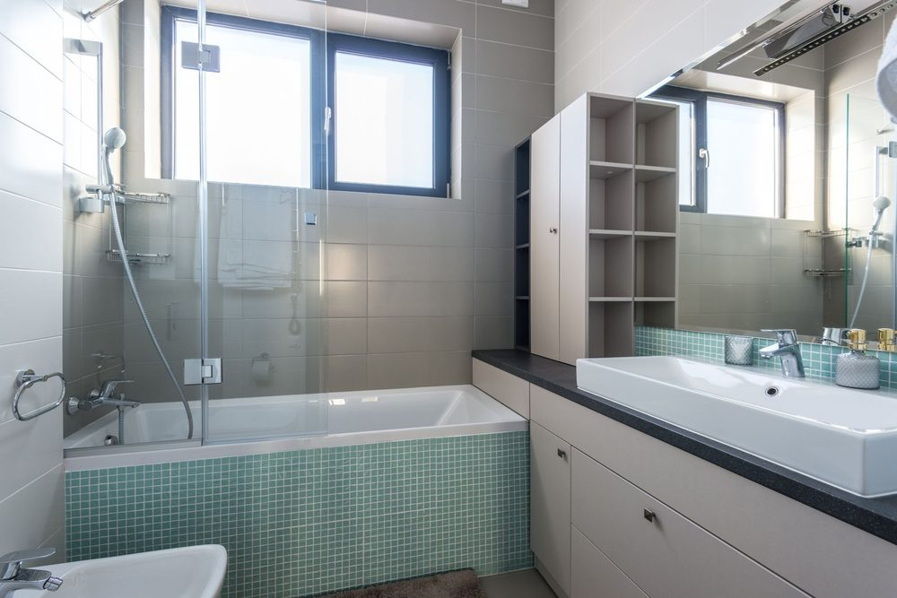
Chapter
Compact wet rooms, illustrated
Indian apartment bathrooms are used here as compact wet-room illustrations for US readers in small rentals. The advice is not India-specific product law. Fixtures, drainage, and splash patterns still change what you can store.
Day 27 · Hall bath with a small basin
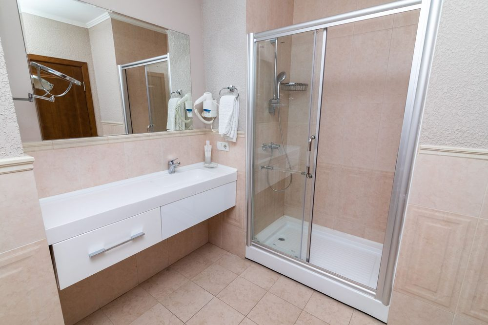
Day 27
Hall bath with a small basin
In this apartment
A Pune 1BHK hall bath, used as a compact-rental illustration, has a small wall-hung basin, almost no counter, a shower that wets the toilet area, and a bucket-and-mug rinse habit alongside a handheld shower.
When the basin has no deck, daily items cannot live around the bowl. Use a caddy and accept that the floor gets wet.
Today's output: a layout note for a no-deck basin — where daily items sit, where they cannot sit, and how splash is handled.
Common compact pattern: wet floor, close fixture spacing, a basin that throws water onto any product left on a narrow ledge. Put daily-must items on a wall-adjacent tray only if it stays out of the spray and the walking path. Otherwise use a personal caddy stored dry and brought to the basin.
Indian-style fixtures often mean more splash and a floor drain. Choose storage that can be wiped and that does not rust on a wet floor. Do not treat a floor-level bottle row as acceptable because 'everyone does it.' It is still a slip hazard.
US readers with a stall shower and a tiny pedestal sink face the same constraint: no deck, high splash, little wall. The city name is not the method.
Do this
If the basin has no usable deck, pick a caddy instead of a product ring around the bowl.
Keep the floor drain path clear.
Choose wipeable containers in the splash radius.
Today's output
No-deck plan
Floor path clear
Wipeable containers
Day 28 · Splash, moisture, and mixed fixtures
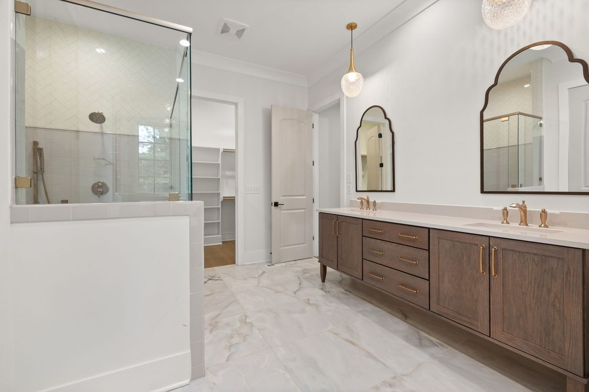
Day 28
Splash, moisture, and mixed fixtures
In this apartment
A Bengaluru primary bath, used as a larger-but-still-wet illustration, has a shower cubicle plus a wet wash area. Metal finishes do not match. The rental tiles are glossy and slippery when soapy.
Map splash to choose wipeable storage. Persistent moisture is a report, not a product.
Today's output: a moisture map of where water actually lands, plus a yes/no on whether any dampness needs a landlord report rather than a new organizer.
If the shower door does not contain spray, treat more of the room as wet zone. Mats need drying. Wooden organizers fail here. Ventilated bins beat sealed pretty boxes for items that get splashed.
A leak, a fan that does not run, peeling caulk with ongoing dampness, or growth that returns after ordinary cleaning is a building issue. Report it. Do not park a caddy in front of it.
Do not assume a corner caddy fits every stall. Use the Day 9 shower numbers. This is an application day, not a second measuring day.
Do this
Mark where water actually lands after one shower.
Move paper out of that radius.
Write report / clean / ignore for any persistent damp patch — ignore is only for dry, intact surfaces.
Today's output
Moisture map
Paper removed from splash
Report-or-clean decision
Chapter opener
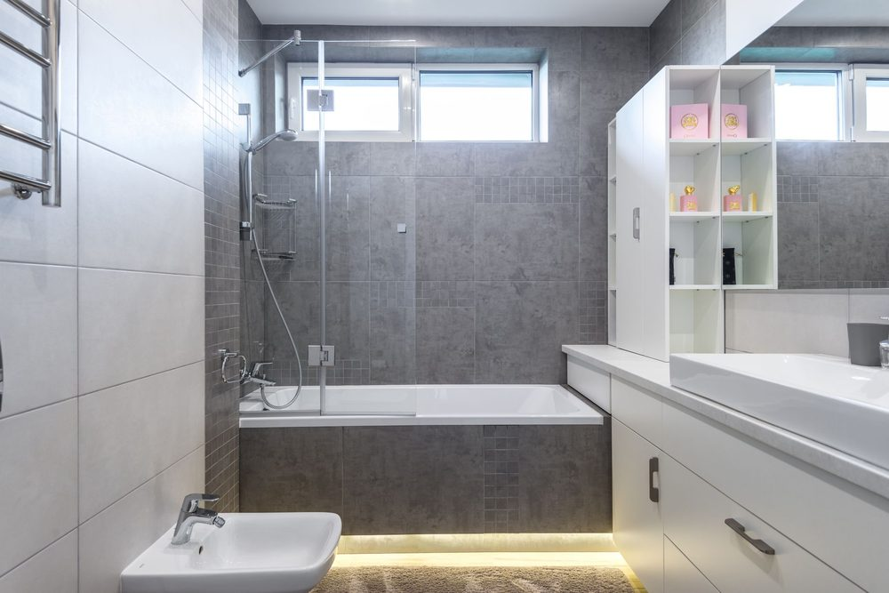
Chapter
Shower and tub storage
Shower storage is a safety and hygiene problem first. Appearance is a distant third. Do not prescribe one mount as universally safe.
Day 29 · Nothing on the shower floor
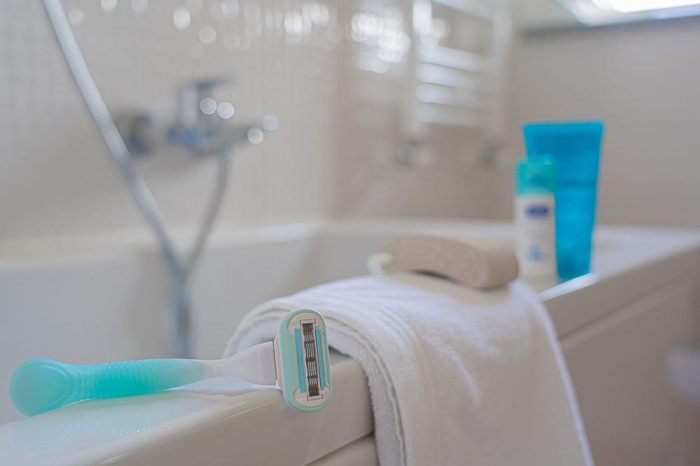
Day 29
Nothing on the shower floor
In this apartment
A stall has no niche. Bottles ring the drain. Someone already slipped once.
Standing space and the drain stay clear. If storage cannot be stable and permitted, products leave the stall.
Today's output: a shower storage decision from the condition table — freestanding, removable, built-in, or products outside the stall.
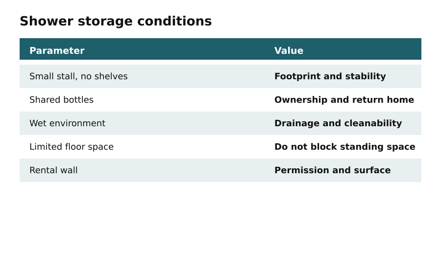
Choose by condition. No single mount is universally safe.
Small stall, no shelves: consider a hanging caddy only if the manufacturer allows that rod or door, a corner unit only if the floor and walls make it stable, or a daily caddy that enters and leaves with the person. Evaluate footprint and tip risk on your actual floor.
Sloped or textured floors: many stools and tripods walk or tip. If it wobbles in a dry test, it does not belong in a soapy stall.
If the lease forbids mounting and nothing freestanding is stable, shower products live on a dry-zone tray and come in for the shower. That is a valid solution.
Do this
Clear the shower floor completely.
Dry-test any freestanding unit on that floor.
If it fails, use a bring-in caddy.
Today's output
Floor cleared
Stability test
Fallback caddy
Day 30 · Shared bottles versus personal bottles
Day 30
Shared bottles versus personal bottles
In this apartment
One person uses a prescription scalp treatment. The other grabs it as 'the extra shampoo.'
Shared products live in a center position and look shared. Personal products are labeled and harder to grab by mistake.
Today's output: a shower ownership map — shared, person A, person B — and a rule for the person with more products.
Shared bottles: one of each function if you truly share. Place them where both can return them. If they never get returned, they were not shared; they were abandoned.
Personal bottles: label the shoulder or use different bottle shapes. The person with a much larger hair routine does not get the entire niche by default. They get a hanging caddy of their own or they reduce. Prime niches are for daily-must, not for a ten-step hair line.
Prevent mix-ups for medicated or sensitive products with opaque or distinct packaging and a verbal agreement: do not 'just try' the other person's bottles.
Do this
Mark shared versus personal.
Label personal bottles.
Move extra hair products out of the stall.
Today's output
Ownership map
Labels on personal bottles
Extra products removed
Day 31 · Drainage, film, and cleanable storage
Day 31
Drainage, film, and cleanable storage
In this apartment
A sealed pretty bin in the shower holds bar soap in a puddle. The caddy cannot come off the wall to be washed.
Water must drain. Storage must be removable enough to clean. Organizing is not a substitute for washing the organizer.
Today's output: every shower container either drains or leaves the stall; a cleaning date for the caddy itself.
Choose slotted soap rests and open baskets over closed cups. Dump standing water after each shower if a container still holds it. Bottles with pumps should stand upright so they do not leak into a pool.
If adhesive or clamp hardware cannot be cleaned without damaging the wall, you chose the wrong hardware for a rental. Prefer units you can lift off and wash in the sink.
Prevent bottles falling: do not overload a high ledge; keep heavy bottles low and centered; avoid slick ledges without a lip.
Do this
Replace closed wet cups with draining rests.
Schedule a wash of the caddy.
Move heavy bottles low.
Today's output
Draining rests
Caddy can be washed
Heavy bottles low
Day 32 · Razors and grooming in the wet zone
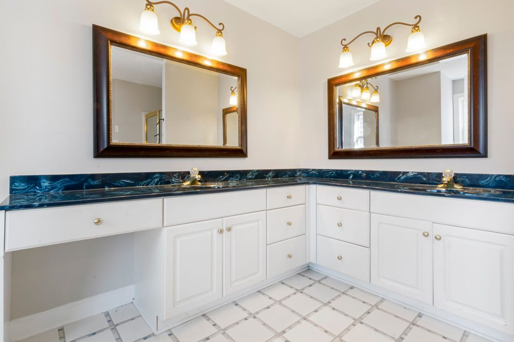
Day 32
Razors and grooming in the wet zone
In this apartment
Loose razors sit on the tub edge. A child guest is visiting this weekend. The book is for adult housemates, but guests change the risk.
Razors get a dedicated dry-enough cup or case, not a tub ledge. This is not a childproofing guarantee.
Today's output: a razor and grooming-tool home that is not the tub edge, plus a guest rule.
Store razors in a small cup or case in a personal zone, blades protected as the product design allows. Do not leave them in standing water. Replace damaged handles. This book does not claim childproof storage. If children use the bathroom, lockable or out-of-reach storage and adult supervision are separate decisions.
Grooming scissors and trimmers follow the electrical and wet-hand rules if they plug in. Battery trimmers still should not sit in the splash zone.
When guests or children visit, extra rules apply: clear the tub ledge, move tools, add a guest towel hook. Temporary does not mean 'leave the razor where it is.'
Do this
Move razors off the tub ledge.
Give each adult a tool cup.
Write a guest-clear rule.
Today's output
Razor cup
Guest-clear rule
No tub-ledge tools
Chapter opener
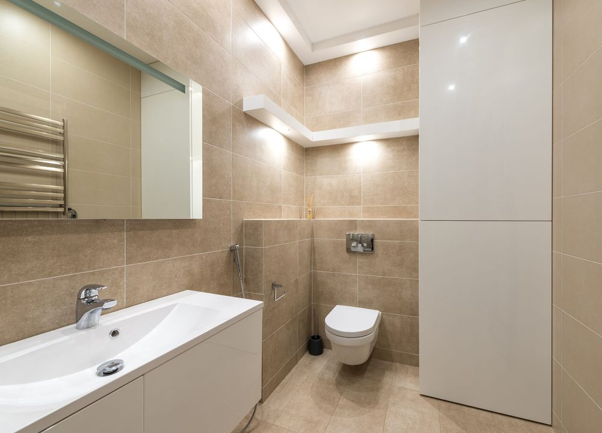
Chapter
Cleaning supplies and shared chores
A bathroom organization project that never names a cleaner, a chore split, or chemical separation is incomplete. Do not mix products. Do not pour chemicals into unlabeled bottles.
Day 33 · One caddy, original bottles
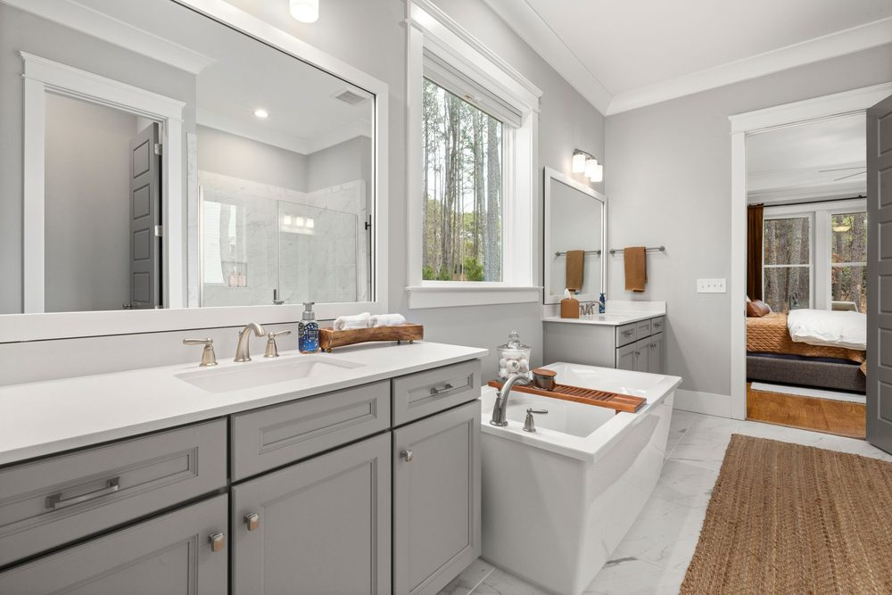
Day 33
One caddy, original bottles
In this apartment
Under the sink, a bleach bottle leans on a hair-dye kit. Someone poured bathroom cleaner into an unmarked spray bottle.
Keep cleaners in original labeled bottles, separated from personal care, and never mixed.
Today's output: a dedicated cleaner location with original bottles only, away from toothbrushes and medicines.
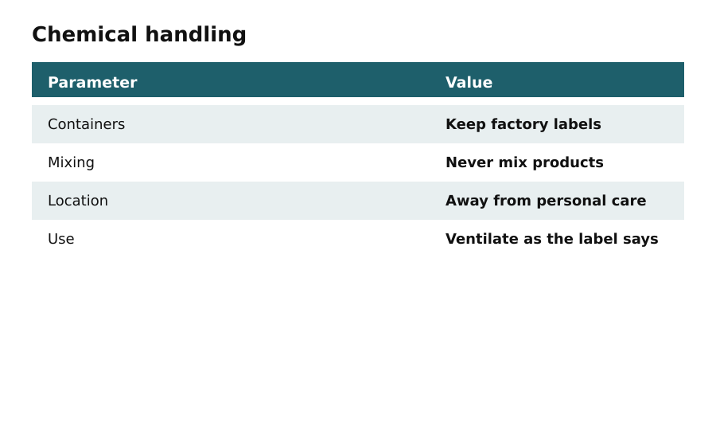
Organization does not change chemistry.
Store a small set: a daily surface cleaner you actually use, a toilet product, and a dry cloth. Follow each label for surfaces, ventilation, and contact time. Never mix bleach with acids or ammonia. If you do not know what is in a bottle, do not mix it with anything.
Do not decant cleaners into pretty unlabeled bottles. Do not store them in the shower stall. Keep them where a leak will not contaminate lotion and dental items — a separate bin with a liner is enough.
If the cabinet is too small, the cleaner caddy can live in a hall closet and enter the bathroom for the job.
Do this
Gather cleaners into one bin.
Discard unlabeled mixes.
Separate them from personal care.
Today's output
Original labels only
Separate bin
No shower storage for chemicals
Day 34 · Sponges, brushes, and drying
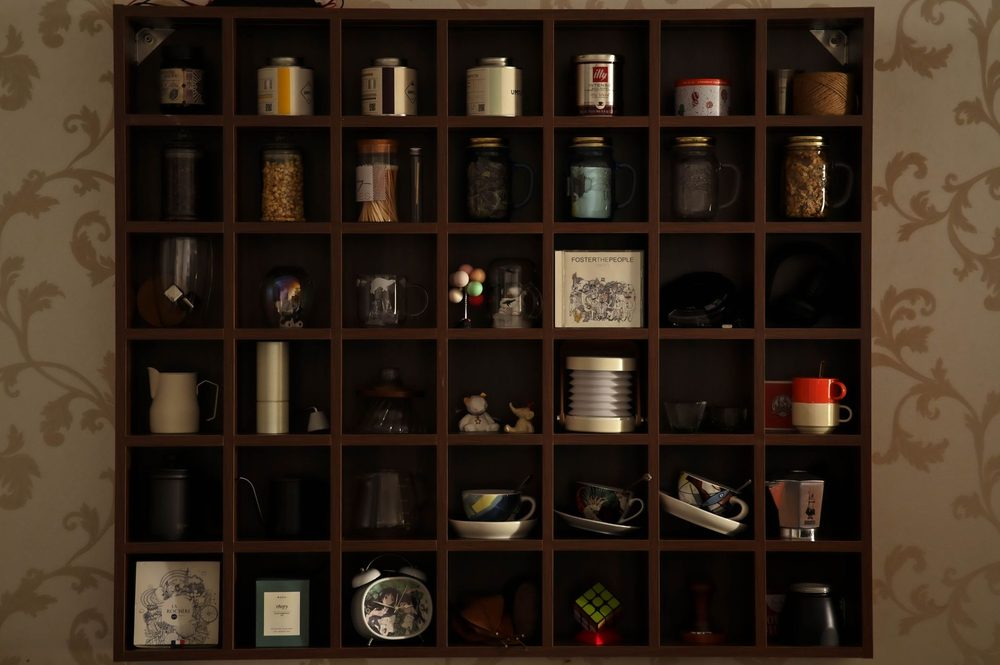
Day 34
Sponges, brushes, and drying
In this apartment
A sponge lives in a wet saucer under the sink. A toilet brush stands in a full cup of dirty water.
Dry the tools you use. Do not treat persistent mold as a storage problem.
Today's output: a drying spot for cloths and brushes that is not a puddle, plus a report line if you see persistent mold or a leak.
Rinse cloths and hang them. Do not store soaking sponges and loofahs in closed cups. Toilet brushes should drip in their holder, and the holder should be emptied and rinsed on a schedule. Follow product guidance for replacement.
Routine surface cleaning means wiping soap film and washing tools with a product labeled for that surface. That is not mold remediation. Do not mix cleaners. Do not cover growth with a bin.
If mold is extensive, keeps returning, or involves damaged building materials, stop reorganizing that area and follow qualified professional guidance. Tell the landlord about leaks and persistent dampness.
Do this
Hang cloths to dry.
Empty brush holders.
If growth is more than a washable surface film, report it instead of covering it.
Today's output
Drying spot
Brush holder emptied
Remediation vs cleaning distinguished
Day 35 · Who cleans what
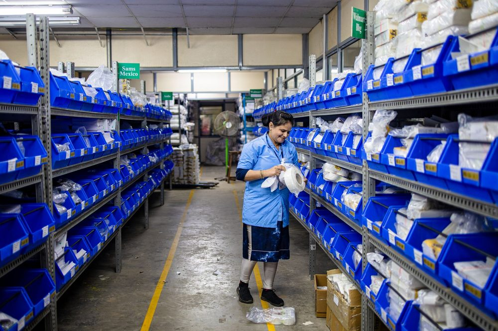
Day 35
Who cleans what
In this apartment
Both people think the other owns toilet cleaning. The room is organized and still sticky.
Write a chore split with a time estimate. Organization is not the chore.
Today's output: a weekly cleaning split — surfaces, toilet, floor, liners, caddy wash — with names and rough minutes.
A realistic split: one person wipes sink and mirror twice a week (about ten minutes), the other handles toilet and floor (about fifteen), and you alternate waste liners. Adjust for disability, work hours, and who uses more products. Fairness can be equal time, not identical tasks.
Include the organizers: trays and bins get a wash, not only a tidy. Soap film on an 'organized' caddy is still dirt.
If one person refuses chores, the storage system will still fail. Name that as a household issue, not a missing acrylic box.
Do this
List tasks and minutes.
Assign names.
Add organizer washing to the list.
Today's output
Task list with minutes
Names assigned
Organizer wash included
Day 36 · Toilet paper and backups
Day 36
Toilet paper and backups
In this apartment
The last roll is always a surprise. Backups are hidden behind cleaning chemicals and get wet.
Shared consumables get a dry, obvious backup home and a refill trigger, not a treasure hunt.
Today's output: a marked spot for the extra toilet paper and a trigger — when the current roll is the last, someone restocks.
Keep at least one backup roll in a dry bin or on a high shelf that is still reachable for both people. If reach is uneven, do not put the backup on a tall cabinet only one person can use.
Paper goods hate humidity. Do not store a bulk pack on the tank lid in a wet room. A hall closet is a better bulk home; the bathroom holds one backup.
The shopping list is shared. The person who notices the trigger adds it. Do not moralize about who uses more paper.
Do this
Place one dry backup roll in an obvious spot.
Move bulk packs out of the wet room.
Add a shared list trigger.
Today's output
Visible backup
Bulk out of wet room
Shared list trigger
Chapter opener
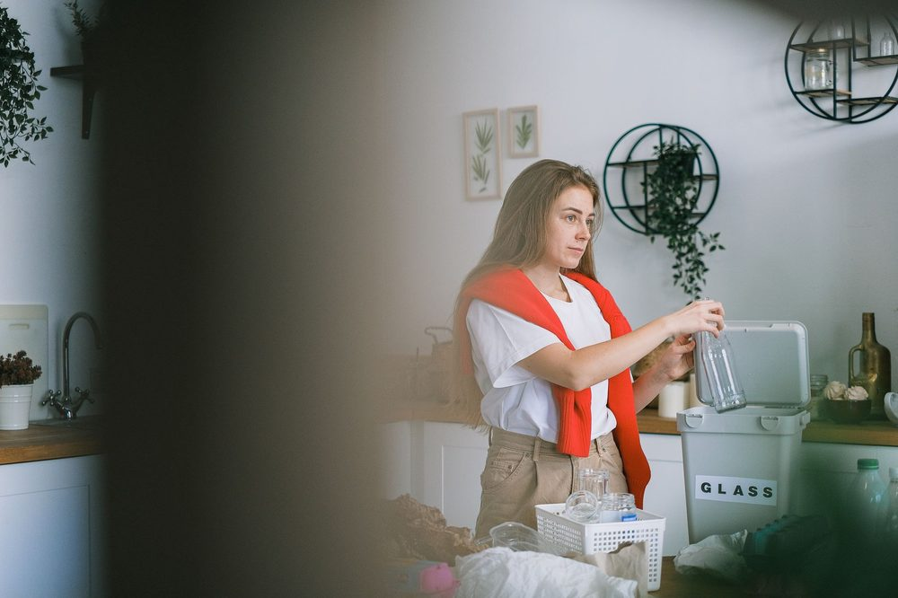
Chapter
Privacy, access, and guests
A shared bathroom still needs private storage, reachable storage, and a plan for extra people. This chapter is about the bathroom, not the kitchen.
Day 37 · Sensitive products need a real home
Day 37
Sensitive products need a real home
In this apartment
Anjali stores prescription cream and menstrual products in a clear cup because the roommate 'doesn't care.' The roommate still rummages.
Privacy is a container and a boundary, not a personality trait.
Today's output: an opaque personal bin or pouch for each person, plus a written 'do not open' rule.
Sensitive items include prescription products, menstrual products someone does not want displayed, personal lubricants, and anything a person has asked to keep private. An opaque bin in a drawer, a pouch on a high personal shelf, or a caddy that lives in a bedroom are all valid.
Labels can be generic: 'A — personal' is enough. You do not have to advertise contents. Accessing someone else's privacy bin is a household boundary, not a cute organizer fail.
If the only storage is open shelves, privacy requires lids. Clear acrylic is the wrong finish for this job.
Do this
Give each person an opaque bin or pouch.
Agree that privacy bins are not shared.
Move displays of sensitive products off open shelves.
Today's output
Opaque personal container
Do-not-open rule
Open-shelf displays reduced
Day 38 · Reach is not the same for both people
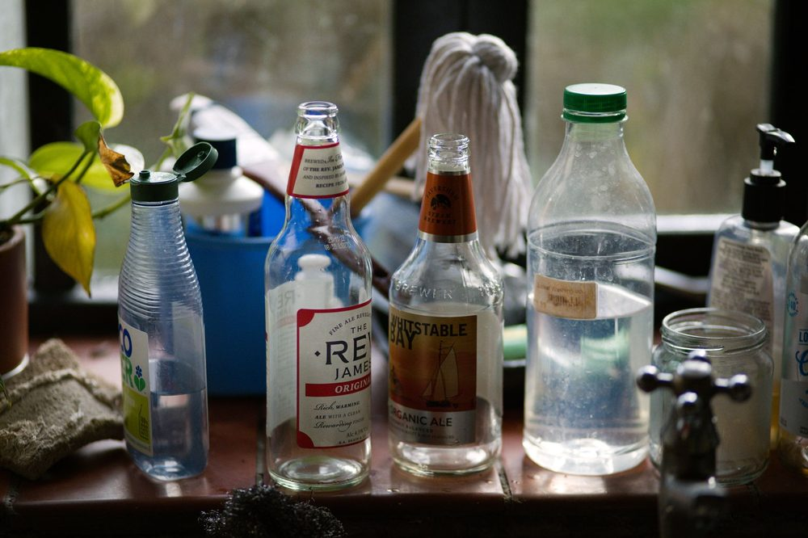
Day 38
Reach is not the same for both people
In this apartment
Rohan cannot comfortably kneel to a deep under-sink bin. The 'fair' assignment put his daily kit there because Priya wanted the drawer.
Daily-must items go where the person who uses them can actually reach. Fairness includes bodies, not only shelf counts.
Today's output: a reach check — high, low, deep — for each person, with daily items moved out of any zone they cannot use safely.
Do not assume both people can use the lowest cabinet, the highest shelf, or a back corner behind pipes. Reduced reach, balance issues, or pain change the map. Put that person's daily-must items where they can use them, and give the other person volume elsewhere. There is no universal counter-to-chest rule; test with the person who lives here.
Leave space to turn, to use a mobility device if one is present, and to sit on a stable stool if someone needs to sit to dress a wound or shave. This book is not an accessibility assessment. If needs are complex, consult an occupational therapist or another qualified professional.
Handles on bins help. Heavy bulk on the floor does not.
Do this
Watch each person reach daily items once.
Move anything that requires an unsafe bend or climb.
Keep the turning path clear.
Today's output
Reach check done
Daily items at usable height
Path clear
Day 39 · Guests and extra toothbrushes
Day 39
Guests and extra toothbrushes
In this apartment
Weekend guests add two towels, a toiletry bag, and a hair dryer to a bathroom that already had no spare hook.
Guests get a temporary kit location that can leave. They do not inherit the prime tray.
Today's output: a guest kit spot, a guest towel hook or bar, and a restore-the-room step after they leave.
Park guest toiletries in a bag on a bedroom chair or a labeled bin that sits on the toilet tank only if it is stable and dry — better: a hook on the door if the door still closes. Extra hair tools follow the same cooling and outlet rules.
If children visit, this book does not provide childproofing. Move razors, medicines, and cleaners to a higher or closed location as a household decision, following product instructions. Do not rely on pretty bins as safety devices.
After guests leave, run a 10-minute restore: liners, towels, floor path, extra bottles out.
Do this
Name a guest-kit parking spot.
Add a temporary towel location.
Write a 10-minute restore list.
Today's output
Guest parking spot
Temporary towel plan
Restore list
Chapter opener
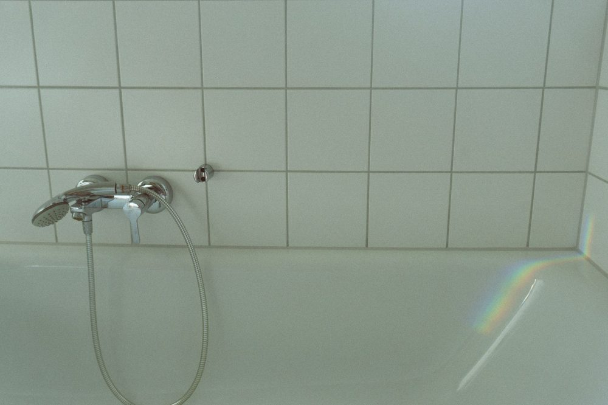
Chapter
Style that works with rental fixtures
Style is a budget hierarchy and a two-person compromise, not a palette essay. You will not replace the tile.
Day 40 · Five choices, not a mood board
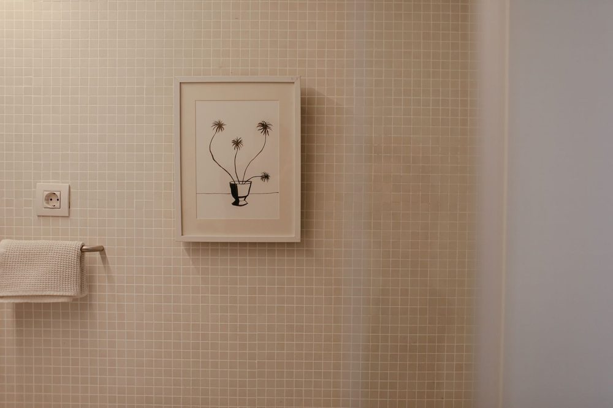
Day 40
Five choices, not a mood board
In this apartment
Riya wants pastels. Arjun wants black. The tile is beige builder-grade. They have been arguing about 'the palette' for a week.
Choose one dominant neutral, one accent, one repeated texture, one small-hardware finish, and one thing you will not add.
Today's output: those five choices written down, plus one sample combination that both people can live with.
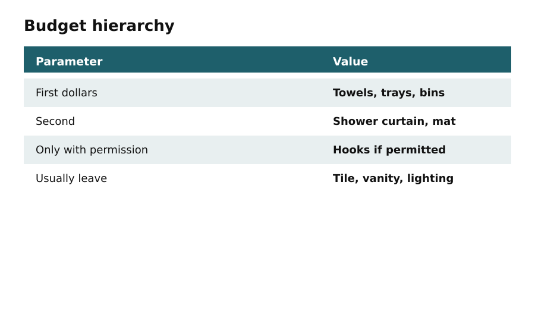
Change the cheapest reversible layers first.
Example A, compact rental: white towels, one oak-look bath mat, matte white bins, black small accessories to echo a black faucet, no extra candles. Example B: sand towels, clear bins, one sage cup, brushed-nickel accessories to echo existing bars, no printed labels in three fonts. Example C: all-white textiles, one striped shower curtain if the lease allows, gray bins, no metallic mix beyond what is already screwed to the wall.
Mismatched metals are normal in rentals. Repeat one accessory finish and ignore the rest. Do not buy a new faucet to 'complete the look' in a unit you do not own.
If you disagree, let textiles carry the accent and keep containers boring. Containers are easier to share than a loud curtain.
Do this
Write the five choices.
Pick one complete example and steal its structure, not its exact colors.
Leave major fixtures alone.
Today's output
Five choices
One complete example
Fixtures left alone
Day 41 · Color through things you can take with you
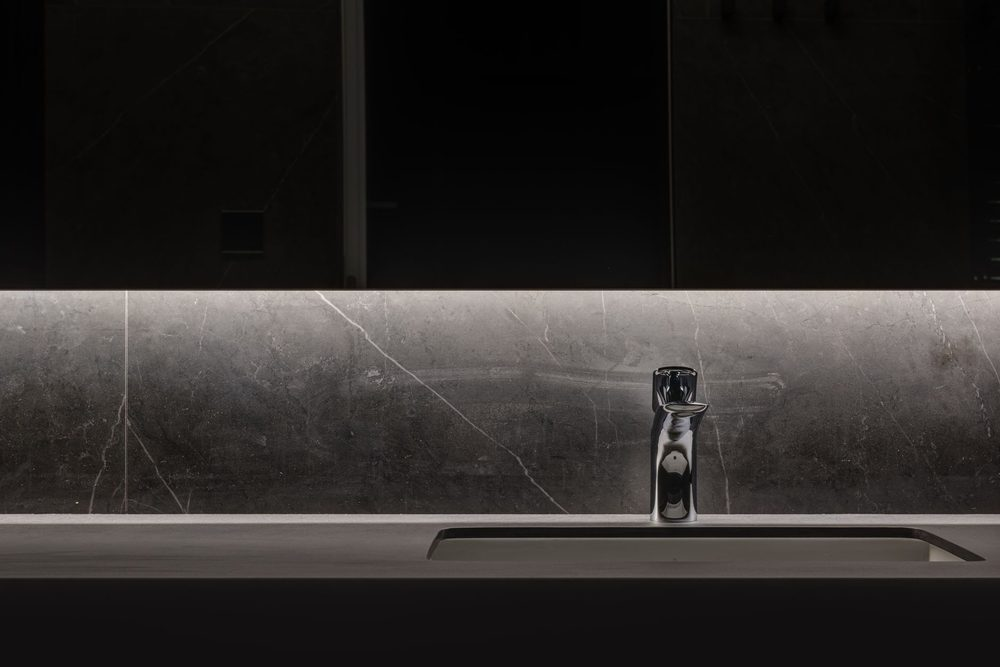
Day 41
Color through things you can take with you
In this apartment
Priya wants a green bathroom. The landlord painted everything beige. The lease forbids painting tile.
Introduce color with towels, a curtain if allowed, cups, and labels. Do not start with paint.
Today's output: a removable color list with prices in USD you are willing to spend, starting under $40 if the budget is tight.
A pair of towels and two $8 trays will do more than a $30 set of decals that may damage paint. Confirm curtain-rod hardware before buying a curtain. Some rods are tension; some are screwed.
Skip peel-and-stick tile unless the manufacturer lists your surface and you accept residue risk. Most renters should skip it.
If two people hate each other's accent, each gets a small personal cue on their tray and the shared field stays neutral.
Do this
List removable color items only.
Cap the first spend.
Skip wall films unless the lease and the surface clearly allow them.
Today's output
Removable list
USD cap
No unapproved wall film
Day 42 · Labels that survive steam
Day 42
Labels that survive steam
In this apartment
Paper labels curled in a week. Guest labels in script cannot be read from the door.
One font family, short words, waterproof enough for the zone they live in.
Today's output: a micro guide — font, size, color, waterproof method — used on every new label.
Dry zones can use simple printed tape. Wet zones need waterproof labels or embossed plastic. Title Case category words beat jokes. Initials beat full essays.
Place labels where you can read them while standing in your normal spot. Test one label in the shower for a week before labeling twelve bottles.
If you already wrote a style guide in your head, this is the only part that must exist on paper.
Do this
Choose one label method for dry and one for wet.
Print a sample and steam-test it.
Keep wording to one or two words.
Today's output
Dry method
Wet method
Steam test
Day 43 · Two tastes, one bathroom
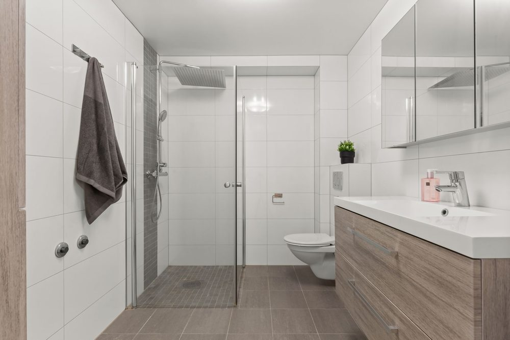
Day 43
Two tastes, one bathroom
In this apartment
One person wants spa calm. The other wants visible products as a checklist. Both live here.
Shared field stays calm. Personal trays may differ slightly. Cap the difference.
Today's output: a written compromise — shared field rules plus the one personal exception each person gets.
The shared field is towels, curtain, trash bin, and the center tray. Those match. Personal trays can differ in one small way: a color dot, a different cup, a small frame-free object that still wipes clean.
If the exception creates clutter, it loses. Run a two-week look test. Photograph before and after.
Do not resolve a storage-capacity fight with a new accent color.
Do this
Lock shared-field items.
Allow one personal exception each.
Review in two weeks with photos.
Today's output
Shared-field list
One exception each
Review date
Chapter opener
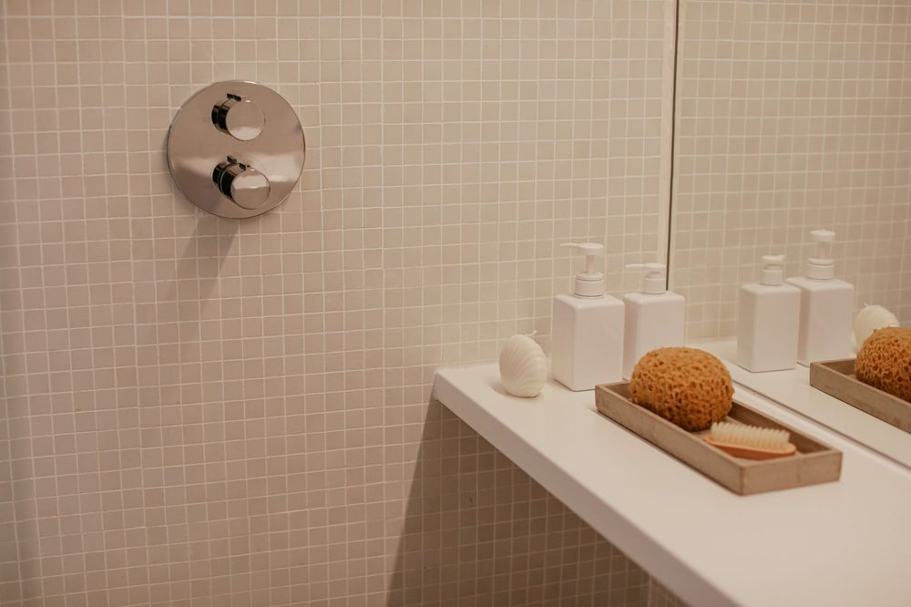
Chapter
Choose organizers without overbuying
Measure first, buy second. Record width, depth, and usable height. Subtract plumbing, hinges, handles, lids, and the extra space needed to pull a container out. A container that matches the empty opening can still fail once it is loaded. Every organizer category needs a problem, a not-for list, a measurement, a material note, a removable note, and a maintenance note.
Day 44 · The sizing ladder with real numbers
Day 44
The sizing ladder with real numbers
In this apartment
Priya measured a 21.5-by-14-by-4-inch drawer. She is looking at a 12-inch-wide cutlery tray meant for a kitchen, used here only as a size warning.
Convert existing measurements into a buy list. Do not remeasure the room.
Today's output: a small / medium / large ladder built from the Day 8–10 interiors, not from catalog names and not from a new measuring round.
Skip the purchase if any line is blank.
Illustrative ladder only, replace with your numbers: a small tray might stay under about 10 inches wide; a medium bin fits a measured under-sink pocket; large belongs outside the bathroom if no pocket fits. None of those inches is a required minimum.
Test lid, handle, and removal clearance against the numbers you already have. Buy one test piece, then a twin.
USD reality: an $8 adjustable divider plus a $12 bin often beats a $40 matching suite that ignores the pipes.
Do this
Copy Day 8–10 max interiors into small, medium, and large rows.
Buy one test piece that fits those numbers.
Only then match a second.
Today's output
Ladder from existing numbers
One test buy
Lid and removal clearance
Day 45 · Dividers that earn the drawer
Day 45
Dividers that earn the drawer
In this apartment
A flimsy spring divider collapses when the drawer slams. Daily items mix again.
Dividers are for daily lanes you already defined. They are not a personality system.
Today's output: a divider choice that locks to the measured interior, or a no-divider decision if the drawer is too shallow or warped.
Use adjustable dividers or a cut-to-fit tray only after the interior width is known. Add a non-slip liner if trays walk, following the liner's wet-use limits — many liners are not shower-rated.
Deep drawers get a lift-out tray, not more tiny cells that cannot be reached. Daily items stay on the top layer.
When not to use dividers: a warped drawer, a single shared handful of items, or a drawer that must stay empty for a hair-tool landing after cooling.
Do this
Measure interior again with the divider in mind.
Install only if it stays put through ten open-close cycles.
Keep daily items on the accessible layer.
Today's output
Interior remeasured
Slam test
Daily layer visible
Day 46 · Trays, not a product skyline
Day 46
Trays, not a product skyline
In this apartment
Alex and Jordan put two huge trays on a 10-inch-deep counter. Nothing can be set down with wet hands.
Trays should be smaller than the usable footprint and shorter than the habit of putting 'just one more thing' on them.
Today's output: tray dimensions that leave a landing zone beside the sink.
Low profile, raised edge, wipeable. Two identical small trays or one divided tray. Cap contents. Open trays for daily use; lids slow mornings and collect moisture.
When not to use a tray: if it forces products into the splash line or blocks the faucet handles.
Material: plastic or coated metal that will not rust in this room. Untreated wood on a wet vanity is a maintenance project.
Do this
Measure remaining counter after the sink and faucet.
Choose trays smaller than that rectangle.
Leave a bare landing zone.
Today's output
Tray smaller than footprint
Landing zone
Wipeable material
Day 47 · Under-sink bins that wrap pipes
Day 47
Under-sink bins that wrap pipes
In this apartment
Humidity under Priya's sink rusted a cheap metal file box. Cardboard backups went limp.
Moisture-resistant, sized to each pocket, lined, and pullable. Sealed lids only for things that must stay dry.
Today's output: two moisture-safe bins chosen from the Day 8 pocket numbers and the Day 16 placement plan — not a third measuring of the same pipes.
Ventilated sides help items that already got damp. Lids help paper goods if you insist on storing them here — better to move paper out. A removable liner catches drips so you notice a leak.
Maintenance: empty and wipe monthly. If the liner is wet, find the source. A leak is a landlord or plumber issue.
Skip roll-outs that need screws unless you have permission and the floor of the cabinet is sound.
Do this
Use the smaller Day 8 pocket as the first bin limit.
Add a liner.
Leave valves clear.
Today's output
Pocket-fit bins
Liner in
Valves clear
Day 48 · Shower hardware without a default mount
Day 48
Shower hardware without a default mount
In this apartment
A rusting tension caddy stains grout. The listing said rust-resistant.
Match material to wet use, match mount to permission, match height to bottles. None of that is universal.
Today's output: a shower storage choice with a written mount type, material, and a cleanability yes.
Rust-resistant is a claim to verify against reviews and the finish, not a promise. Plastic can still get biofilm. Metal can still rust at welds. Choose something you can remove and wash.
Adhesive, clamp, tension, and suction each fail in different ways. Follow the package for surface, cure time, and weight. Do not hang glass bottles from a suction cup rated for a loofah.
If no option is permitted and stable, the bring-in caddy remains the answer.
Do this
Pick mount type from the renter tree.
Match openings to bottle heights.
Confirm you can wash the unit.
Today's output
Mount type chosen
Weight vs rating
Washable
Chapter opener
Chapter
Labels, refills, and the weekly reset
This chapter installs the maintenance system. It does not re-explain fairness, volume, or visibility.
Day 49 · Label the map you already have
Day 49
Label the map you already have
In this apartment
Riya and Arjun already assigned lanes. They still argue because nothing is marked.
Labels demonstrate the system. They are not a substitute for the system.
Today's output: labels on person A, person B, shared, backups, and privacy bins, using the wet/dry methods you already chose.
Put initials on personal trays and category words on shared bins: Soap, Paper, Cleaners. Do not label every cotton swab.
Icons are optional. If you use them, use three at most. Test readability from the doorway.
If a label needs a paragraph, the zone is wrong.
Do this
Label the five zone types.
Skip decorative wording.
Photograph the labeled map.
Today's output
Five zone types labeled
Short words only
Photo saved
Day 50 · Shared refills with a trigger
Day 50
Shared refills with a trigger
In this apartment
Hand soap hits empty during a work-from-home day. Nobody owns the Target run.
Each shared consumable has a visible trigger and a name who restocks, rotating if you want.
Today's output: a list — soap, paper, toothpaste if shared, liners — with a trigger and a shopping-list home.
A simple trigger: when you can see the last backup, add it to the list the same day. Do not wait for zero. Store bathroom backups in the labeled overflow, not a mystery hall bag.
Money: decide whether shared items come from a joint fund or alternate purchases. Write the dollar split. This book will not invent your household economy beyond 'name it.'
Personal products are restocked by their owner unless you agree otherwise.
Do this
List shared consumables.
Set a last-backup trigger.
Put the list where both people see it.
Today's output
Consumable list
Trigger
List location
Day 51 · Rotate actives, do not archive half bottles
Day 51
Rotate actives, do not archive half bottles
In this apartment
Four half-used sunscreens live in the cabinet 'because summer is coming.'
One active per personal category in the bathroom. Next-up lives in overflow. Stagnant product leaves.
Today's output: one active and at most one next-up per crowded category, using the Day 5 duplicate log. Do not pull the whole bathroom out again.
Open the Day 5–7 photos. Keep the one active you already chose. Park next-up in overflow. If a product is still untouched from that inventory, it leaves the bathroom now.
When active finishes, next-up moves forward. If next-up is expired, it does not move forward. Quarterly, dump stagnant product according to the label and local rules.
Makeup and skincare in humidity: if the formula pills, smells, or the package says keep dry, it should not live in the shower or on the tank lid.
This is not a skincare medical guide. When in doubt, follow the package or ask a pharmacist.
Do this
Pick one active per crowded category.
Mark open dates on sunscreens and similar.
Remove stagnant extras.
Today's output
One active each
Open dates
Stagnant extras out
Day 52 · A ten-minute weekly reset
Day 52
A ten-minute weekly reset
In this apartment
Sita and Vikram's system slides every Thursday. They need minutes, not a monthly project.
The reset is a checklist with a clock. Alternate who leads.
Today's output: a weekly reset card you can finish in about ten minutes.
Finish in about ten minutes.
Return items to zones. Wipe trays. Check wet tools and hanging towels. Empty the liner if needed. Refill shared soap if the trigger hit. Look for damaged cords and expired products. Note one storage conflict for the review date instead of fighting mid-reset.
Monthly, add fifteen minutes to wash the shower caddy and under-sink liner. If you find mold or a leak, stop resetting and handle maintenance.
Keep a cloth and the daily cleaner in the cleaner bin so the reset does not start with a scavenger hunt.
Do this
Write the ten-minute card.
Put it where you will see it.
Alternate who runs it.
Today's output
Ten-minute card
Who leads this week
Cloth in the cleaner bin
Chapter opener
Chapter
Negotiate without a fight
Use a short script: problem, both needs, two or three options, a trial, a review date, a final line. Do not re-teach the Fairness Triangle.
Day 53 · The counter is not a personality test
Day 53
The counter is not a personality test
In this apartment
Both people want the same 8-inch stretch beside the faucet for a 'daily' bottle.
Prime inches go to shared essentials and true daily-must items. Everything else gets a drawer or a trial.
Today's output: a filled mini-script for the counter conflict with two options and a two-week trial.
Option A: one shared soap plus empty stone. Option B: one divided tray with one item each. Option C: rotating weekly display if you truly cannot agree — then review whether anyone actually used the display.
If someone refuses to reduce, the default is Option A plus overflow elsewhere. The person who wants more display does not automatically win the stone.
Record the review date on the calendar, not in a group chat you will mute.
Do this
Write the problem in one sentence.
List both needs.
Pick a trial option and a review date.
Today's output
Problem sentence
Two options
Review date
Day 54 · Tool time without a standoff
Day 54
Tool time without a standoff
In this apartment
The dryer window from Day 21 slipped. Both people are late again.
Renegotiate times with evidence from the last two weeks, or add a second tool with a safe station.
Today's output: either a revised schedule or a second-tool plan that still obeys cooling and outlet rules.
Count actual misses. If one person missed twice, they adjust, or you buy a second dryer if — and only if — there is a second safe use location and storage after cooling.
Do not use the bathroom as a salon while the other person needs the toilet. Sequence the room: toilet and shower first, heat tools after, or the reverse, but name it.
Local electrical rules still win. If the circuit cannot support two high-draw tools, do not test that theory.
Do this
Count misses for two weeks.
Revise windows or plan a second tool safely.
Sequence bathroom uses.
Today's output
Miss count
Schedule or second tool
Room sequence
Day 55 · Style changes as a small trial
Day 55
Style changes as a small trial
In this apartment
Neha wants green towels. Sam wants the current white set. This is not a storage emergency.
Trial one textile change. Do not reopen the whole palette.
Today's output: one textile trial with a one-month photo review.
Buy one set, not a rainbow. Keep containers as they are. If the trial fails, resale or guest-bath use is easier than a full restyle.
If the fight is actually about clutter, go back to the counter script. Color will not shrink a collection.
USD cap the trial so it cannot become a renovation.
Do this
Choose one textile change.
Cap the spend.
Set a one-month photo review.
Today's output
One textile
USD cap
Photo review
Day 56 · Overflow after a sale
Day 56
Overflow after a sale
In this apartment
A two-for-one shampoo sale filled the stall. The niche cannot hold it.
If it does not fit the overflow bin, it does not come home, or something equal leaves.
Today's output: a one-in, one-out rule for backups, with a max count per category.
Promotions are not storage. The bathroom has a hard volume. Extra bottles live in a hall closet or they are not purchased.
Write the max: for example, one active and one backup of shared shampoo. Your number comes from the measured overflow bin, not from the coupon.
If one person binge-buys personal products, that volume comes out of their personal allocation, not the shared niche.
Do this
Set a max backup count.
Move sale extras out of the stall.
Apply one-in, one-out.
Today's output
Max backup count
Extras relocated
One-in one-out
Day 57 · Privacy conflicts without a speech
Day 57
Privacy conflicts without a speech
In this apartment
Meera keeps opening Anjali's dermatology bin 'to borrow a cotton pad.'
Restate the boundary once, move the bin if needed, and stop debating the contents.
Today's output: a relocated privacy bin if the current one is too tempting, plus a one-line boundary both people initial.
Offer two options: a less visible location, or a bedroom caddy. The owner chooses. The other person does not need a tour of the contents.
Shared cotton pads belong in the shared tray so nobody has an excuse to open a privacy bin.
If the boundary is still crossed, that is not an organization problem.
Do this
Move the privacy bin if rummaging continues.
Stock shared cotton separately.
Initial the one-line rule.
Today's output
Bin relocated if needed
Shared cotton separate
One-line rule
Chapter opener
Chapter
When the household changes
Guests, seasons, new tools, and health needs should trigger a controlled loop: spot, trial, reverse if needed. Do not rebuild the whole fairness lecture.
Day 58 · Spot the trigger, not the vibe
Day 58
Spot the trigger, not the vibe
In this apartment
Winter creams appear. A guest arrives. A new electric toothbrush needs an outlet. Three different problems, one loop.
Name the trigger: seasonal, guest, device, health, or drift. Change only the zone that trigger affects.
Today's output: a trigger log with one change per line.
Seasonal products swap with the existing daily slot; they do not add a third tray. Guest kits use the parking spot from the privacy chapter. New devices must pass the electrical chapter before they get a 'home.'
Health changes — a new mobility limit, a post-procedure cream, a medicine that cannot sit in steam — override aesthetics. Move daily items to reachable dry storage first.
Drift is when items walk. The weekly reset catches drift. Do not call drift a need for new furniture.
Do this
Write the current trigger.
Change only the affected zone.
Photograph after the change.
Today's output
Trigger named
One-zone change
Photo
Day 59 · Trial, then keep or reverse
Day 59
Trial, then keep or reverse
In this apartment
Rohan's toothbrush charger appeared on the only dry corner. Anika's serums lost their spot.
Propose two placements, trial one, set a review. Chargers follow the same wet-and-cord rules as dryers.
Today's output: two placement options for the new device, a chosen trial, and a review date.
Do not create a new 'charging aesthetic' on a wet board. If the bathroom outlet is a bad idea, charge in another room.
Keep the visual field boring during the trial so you can see whether the function works.
Document the decision in the same note as the original agreement.
Do this
Write two options.
Trial one for two weeks.
Charge elsewhere if the bathroom outlet is wrong.
Today's output
Two options
Trial date
Outlet decision
Day 60 · Reversible first
Day 60
Reversible first
In this apartment
After a health change, Meera needs daily items within a safer reach. She is tempted to drill a new cabinet and to park every medicine on the lowest bathroom shelf.
Change reach with existing furniture. Do not invent a universal medicine shelf.
Today's output: a reversible reach adjustment using furniture you already have, without choosing a universal shelf height.
Move daily-must items to a place the person who uses them can actually reach. That place is defined by their body and the room, not by a height in this book. Use soft-edge bins if dropping is a concern, without claiming they are spill-proof or childproof.
Medicines still follow the label, pharmacist, or prescriber — including during a recovery. Do not relocate a medicine to a low bathroom shelf if the package requires refrigeration, darkness, or a dry limit that the bathroom cannot meet.
Do not drill for a new cabinet in a rental because a blog suggested it. Ask the landlord, and get qualified help if the need is clinical or ongoing. Review after the immediate need calms down.
Do this
Move daily-must items to a reachable place for the person who uses them.
Check each medicine against its own storage instruction before moving it.
Skip drilling unless permitted and necessary.
Today's output
Reachable daily home
Medicines still follow the label
No unplanned drilling
Chapter opener
Chapter
Measurement sheet and storage map
Transfer the Day 8–10 numbers onto these sheets. Do not start a second measuring project. If a field is blank or the room has changed, measure only that field. Example dimensions are illustrations. Accessibility notes differ by person; there is no universal reach height.
Day 61 · How to fill the sheets
Day 61
How to fill the sheets
In this apartment
Aditi and Rohan print the pages, then stare because the boxes ask for inches they never took.
The templates only work if the earlier measurement and inventory chapters were actually done.
Today's output: printed sheets with inch labels, already holding the Day 8–10 numbers — not a blank map you will measure from scratch.
Copy vanity interiors, pockets, shower, door swing, and outlets from the earlier record. Then add person A, person B, shared, overflow, and do-not-store-here from the inventory photos.
Use one color per person if that helps. Write NA where a zone does not exist.
Return to the room only for a blank field or a layout that has changed since Day 10.
Do this
Print or copy the sheets.
Copy Day 8–10 numbers and Day 7 photos onto them.
Write NA where a zone does not exist.
Today's output
Sheets ready
Numbers copied, not re-taken
NA used where needed
Day 62 · Bathroom measurement sheet
Day 62
Bathroom measurement sheet
In this apartment
A hypothetical US hall bath: 60-by-36-inch floor, 24-inch vanity, 32-inch stall, door swinging 28 inches into the room.
The sheet holds your numbers. The printed example is not a clearance standard.
Today's output: the measurement sheet filled from your Day 8–10 record, with every example number replaced or marked NA.
Illustration only — not your bathroom and not a minimum clearance.
Copy interiors, not only outside widths. Include door swing, fixture access, and removal space on the same page. Add who cannot use high, low, or deep storage — that note is personal, not a standard height.
Illustrative fill only, for a hypothetical hall bath, not a minimum: vanity 24 × 18 × 32; drawer 21.5 × 14 × 4; pockets 7 and 9 inches; stall 32 × 32; door swing hits a towel bar. If your sheet matches these numbers exactly, you copied the example. Go measure.
If a line is still blank, measure that line only. Do not restart Days 8–10.
Do this
Transfer Day 8–10 interiors onto the sheet.
Add swing, fixture access, and removal space.
Write an accessibility note for each person, not a universal height.
Today's output
All dimension lines filled or NA
Clearance noted
Reach note
Day 63 · Personal and shared storage map
Day 63
Personal and shared storage map
In this apartment
The same hall bath needs person A on the left drawer lane, person B on the right, shared soap on the deck, overflow in a hall closet, medicines in a bedroom.
The map has five fields: A, B, shared essentials, overflow, and do-not-store-here.
Today's output: those five fields filled with item names, not categories in the abstract.
Person A zone: list the actual daily items and their location. Person B: the same. Shared essentials: soap, paper, liners, basic cleaner. Overflow: backups in the hall closet. Do-not-store-here: medicines that must stay dry, bulk paper, extra hair tools.
Add a small box for the walking path and the wet-floor ban.
If both people still want the same prime niche, write the trial from the negotiation chapter on the map.
Do this
Fill A, B, shared, overflow, banned.
Name real products.
Mark the path and wet-floor ban.
Today's output
Five fields filled
Real product names
Path marked
Day 64 · Vanity map worked example
Day 64
Vanity map worked example
In this apartment
Worked example: 24-inch vanity, one drawer. A: cleanser, moisturizer, toothbrush. B: shave gel, daily lotion, toothbrush. Shared: pump soap. Overflow: extra shampoo in the hall. Banned: prescription cream.
If you cannot copy this density of detail onto your sheet, add detail, do not add theory.
Today's output: your vanity map filled at this level of detail.
Left lane holds A's daily three. Right lane holds B's daily three. Front tray: floss and nail clipper. Counter: soap only. Under-sink left: A's weekly. Under-sink right: B's weekly plus the cleaner bin if it fits without blocking valves.
Medicine cabinet: empty enough to close, or assigned by shelf with tall bottles tested.
If your vanity has no drawer, your map should say 'caddy on dresser' instead of inventing a drawer.
Do this
Copy the structure onto your vanity.
Test-close doors and drawers.
Write the no-drawer fallback if needed.
Today's output
Item-level vanity map
Close test
Fallback if no drawer
Day 65 · Mistakes the sheets catch
Day 65
Mistakes the sheets catch
In this apartment
A couple filled pretty zones, then blocked the plumbing clearance and mixed daily items with guest samples.
The sheet is a trap for specific errors: mixed tiers, blocked valves, unlabeled privacy, and shopping first.
Today's output: a pass over your sheets hunting those four errors.
If daily and occasional items share the prime niche, split them. If a bin covers valves, shrink the bin. If privacy items are on the open map, move them to the opaque bin line. If any purchase is listed without a measurement, mark do not purchase yet.
Overloading a glass shelf is a safety issue. Follow the shelf and the organizer ratings, not a vibe.
Fix the sheet, then the room.
Do this
Hunt mixed tiers.
Hunt blocked valves.
Mark do-not-purchase-yet on blank measurements.
Today's output
Tiers split
Valves clear
Do-not-purchase flags
Day 66 · Lock the map before shopping
Day 66
Lock the map before shopping
In this apartment
Meera is about to shop with a half-filled sheet. Rahul has not agreed to the overflow closet.
Both people initial the map. Unagreed overflow is not a shopping list.
Today's output: initials, a shopping list that only includes measured items, and a do-not-purchase-yet box for the rest.
The list should name location, measured opening, and candidate size. If the overflow closet was never agreed, backups cannot be purchased 'for later.'
Bring the sheet to the store or keep it on your phone. Compare listed product inches to your usable inches in the aisle.
This is the last gate before money leaves the account.
Do this
Initial the map.
Build the measured shopping list.
Park unmeasured wants in do-not-purchase-yet.
Today's output
Initials
Measured list
Do-not-purchase box
Chapter opener
Chapter
Container checklist
Complete this checklist for every purchase. If you cannot fill a row, do not buy the object.
Day 67 · What the checklist prevents
Day 67
What the checklist prevents
In this apartment
Two roommates return $60 of bins that did not fit around a trap and whose labels peeled in steam.
The checklist exists to stop unmeasured, non-removable, and high-maintenance purchases.
Today's output: one blank checklist copy per candidate item.
Columns: location, measured opening, product W × D × H, quantity, removable or fixed, material, wet-rated yes/no, maintenance, do-not-purchase-yet.
This is a bathroom tool. Do not use it to reorganize the kitchen on the same afternoon.
If a finish is cute but not wet-rated, it fails even if it fits.
Do this
Copy the columns.
Make one row per candidate.
Refuse any row with a blank measurement.
Today's output
Columns ready
One row per item
Kitchen left alone
Day 68 · Fill one row with a real example
Day 68
Fill one row with a real example
In this apartment
Worked bathroom example: under-sink right pocket 9 × 12 × 16 inches. Candidate bin 8 × 11 × 10 inches, $13, plastic, removable, wipe monthly.
If the worked example is more complete than your row, your row is not ready.
Today's output: at least one fully filled row for a real item you might buy, including quantity and removable/fixed.
Location: under-sink right. Opening: 9 × 12 × 16 in. Product: 8 × 11 × 10 in. Quantity: 1 test. Removable: yes. Material: plastic. Wet-rated: suitable for damp cabinet, not for standing water. Maintenance: wipe monthly. Do not purchase yet: no, this row is complete — still buy only one.
A second example: shower corner caddy. If permission is unknown, the removable column is 'unknown' and the row stays do-not-purchase-yet.
Handles and lids: write the extra inches. If you did not measure them, the row is incomplete.
Do this
Fill one complete row.
Include handle/lid extra.
Mark unknown permission as do-not-purchase-yet.
Today's output
One complete row
Extra inches included
Permission known or wait
Day 69 · Install, then test the weekday
Day 69
Install, then test the weekday
In this apartment
Bins are in. Labels are not. The first morning, a lid blocks the faucet.
Place containers, run one routine, then label. Labels on a bad placement become residue.
Today's output: a weekday test note and any pull-out of items that failed.
Install in order: in-drawer, under-sink, then shower only if the mount is allowed. Confirm doors close. Confirm valves remain reachable. Confirm nothing sits in standing water.
Run morning and evening once. If a lid is annoying, remove the lid. If a bin sticks, it is too large — that is a return, not a personality issue.
Only then apply wet-rated labels. Press as the label manufacturer specifies on a clean, dry surface.
Do this
Install measured pieces only.
Run one full weekday test.
Label after placement is stable.
Today's output
Doors close
Weekday test
Labels last
Chapter opener
Chapter
Agreement worksheet and move-out
Complete the worksheet with one hypothetical or real bathroom. If you have to invent missing fields, add those fields — this is that page.
Day 70 · What the worksheet must contain
Day 70
What the worksheet must contain
In this apartment
Priya and Aman keep debating in the doorway. They need a form that forces a decision.
Problem, both needs, two or three options, trial period, review date, final agreement. Anything less is a chat.
Today's output: a blank worksheet with those six fields plus a line for overflow and a line for chores.
If a field is blank, the agreement is not done.
Keep it one page. Write product names and inches, not moods. The Fairness Triangle does not need to be redrawn here; apply the decision you already made.
Add a privacy line and an electrical/heat-tool line so those do not get lost in style talk.
Store the completed page in a shared note and inside a cabinet.
Do this
Create the six core fields.
Add overflow, chores, privacy, heat-tool lines.
Keep it to one page.
Today's output
Six core fields
Extra lines added
One page
Day 71 · Fill it with the hall-bath example
Day 71
Fill it with the hall-bath example
In this apartment
Worked example: 24-inch vanity, two adults, one dryer, too many shampoos, one person with more hair product, landlord bans tile holes.
A worksheet you cannot complete with this example is missing a field.
Today's output: the hall-bath example fully written, then your bathroom written the same way.
Problem: both want the niche; floor bottles are a slip risk; dryer cord crosses the path. Needs: A needs daily hair products reachable; B needs a clear shave space and the dryer at 7:20. Options: (1) bring-in hair caddy plus empty stall floor, (2) permitted tension caddy if the rod allows it, (3) hair products in the bedroom. Trial: option 1 for 14 days starting Monday. Review: the following Sunday. Final: stall floor stays empty; A uses a caddy; B gets the drawer right lane; dryer cools on the mat then goes in the caddy; no tile holes.
Overflow: extra shampoo in the hall closet, max one backup. Chores: A wipes trays Sunday; B handles toilet Sunday; liners alternate. Privacy: opaque bin in A's drawer, do not open. Heat tools: cool first; no extension cord.
Now fill your real names. If you cannot, you are missing a measurement or a decision, not a motivational paragraph.
Do this
Copy the example structure.
Replace with your names and inches.
Leave no core field blank.
Today's output
Example understood
Your page filled
No blank core fields
Day 72 · Trial dates and the 14-day rule
Day 72
Trial dates and the 14-day rule
In this apartment
Neha and Karan agreed verbally and never reviewed. The bottles returned to the floor.
A trial without a calendar date is not a trial.
Today's output: start date, end date, and what evidence you will look at — photos, miss count, or a morning test.
Fourteen days is enough to see a weekday pattern. Do not extend forever because nobody wants to be the enforcer. At review, pick keep, modify, or reverse.
Photograph on day 1 and day 14. If the floor is wet and blocked on day 14, the option failed regardless of how it looked on day 1.
Write the next review only if you modified. Otherwise stop holding meetings about the same tray.
Do this
Put start and end on a calendar.
Decide the evidence.
Keep, modify, or reverse on the end date.
Today's output
Calendar dates
Evidence chosen
Keep/modify/reverse
Day 73 · Move-out and the last reset
Day 73
Move-out and the last reset
In this apartment
The lease ends. Nobody remembers which hooks were theirs. A rust ring sits under the caddy.
Move-out is the reverse of every attachment, plus moisture checks, plus photos.
Today's output: a move-out checklist you can reuse even if you are not moving this year — it is also the monthly deep-clean list.
Remove bins, liners, adhesive, over-the-door hooks, and tension hardware. Clean according to the product and the surface. Do not sand rental tile. Photograph empty rooms. Bag original hardware if you swapped anything with permission.
Check under mats, under the bin, behind the toilet, and the fan cover for moisture or mold. Report problems rather than painting over them.
Pack personal products in the same caddies you used daily. That is the point of removable storage.
If adhesive residue remains, stop before aggressive solvents. Ask the landlord or a cleaner who is allowed to work on that finish.